lda_generator <- function(corpus, span_levels, window_size = 10, overlap = 5, num_topics = 20) {
output_dir <- "../output/lda/moving_0219"
if (!dir.exists(output_dir)) {
dir.create(output_dir, recursive = TRUE)
}
start_years <- numeric(length(span_levels))
end_years <- numeric(length(span_levels))
for (i in seq_along(span_levels)) {
years <- strsplit(as.character(span_levels[i]), "-")[[1]]
start_years[i] <- as.numeric(years[1])
end_years[i] <- as.numeric(years[2])
}
for (i in seq_along(span_levels)) {
start_year_span <- start_years[i]
end_year_span <- end_years[i]
start_time <- Sys.time()
# Subset the corpus for the time window
subset <- corpus[corpus$year >= start_year_span & corpus$year <= end_year_span, ]
# Preprocess the subset
tokens <- tokens(subset$text,
remove_numbers = TRUE,
remove_punct = TRUE, # Remove punctuation
remove_symbols = TRUE, # Remove special characters
split_hyphens = TRUE) %>%
tokens_tolower() %>%
tokens_remove(pattern = custom_stopwords) %>%
tokens_wordstem()
subset_dfm <- dfm(tokens)
#Option for Experiment 3
# Convert to TF-IDF matrix
dfm_idf <- dfm_tfidf(subset_dfm,
scheme_tf = "count",
scheme_df = "inverse")
tmod_lda <- textmodel_lda(subset_dfm, k = num_topics)
# Save LDA model
lda_output_file <- file.path(output_dir, paste0("lda_model_", start_year_span, "-", end_year_span, ".RDS"))
saveRDS(tmod_lda, lda_output_file)
# Move the window with overlap
start_year_span <- start_year_span + overlap
end_year_span <- end_year_span + overlap
end_time <- Sys.time()
elapsed_time <- end_time - start_time
cat("Elapsed time for iteration:", elapsed_time, "\n")
}
}
# Execute
#lda_generator(light, span_levels) Moving LDA Versions
TO DO
- Change the number of topics to even 20. With k=10, it shows too many country names.
- Also lower the correlation threshold from 0.8 to 0.6.
Introduction
This study analyzes the global agenda of the United Nations General Debate (UNGD) and shows temporal development of the topics. Substantively, UNGDC reflects in change of agendas when exogenous shocks take place. The issue of connecting time-series evolution of topic has been addressed by others. Rieger et al. (Rieger, Jentsch, and Rahnenführer 2021) introduces a sequential approach to LDA with the accompanying package, and Greene at al. (Greene and Cross 2017) uses non-negative matrix factorization to analyze the European Parliament Debate Corpus.
There are two main challenges to address cross-section time-series text dataset. First, same topic is represented with different sets of terms over time, given the social context and norms around a specific construct. Second, given changes around the topic representation, it requires theory-based post-labeling to
Goal
In order to generate LDA estimations across time more smoothly, this script changes the UNGDC_topic_modeling_updated.qmdand experiments with different moving window. Just like the other scripts, I use cleaned.csv file. It has four columns: “ccode_iso”, “session”, “year”, and finally “text”.
Experiment logs
Size of the window, and overlapping interval can influence the level of correlation between vectors. The goal of experiments with changing parameters is to capture general themes that discuss beyond a region-specific topic. Furthermore, I overcome the problem of raw term frequency that treats all terms as equally important. Inverse document frequency (idf) of a term is a weight, defined as logged value of the total number of documents in a collection denominated by the number of documents that contain the term. Intuitively, this gives less weight to terms that show up commonly across all the documents. The term frequency-inverse document frequency(tf-idf) weighting scheme returns a weight to a term that increases with the number of occurrence within a small (Rieger, Jentsch, and Rahnenführer 2021)set of documents ((Manning, Raghavan, and Schütze 2008)). This supplements the explicit omission of stop words by winnowing out context-specific frequent words.
There are different options for weight type, which determines the way each term is counted. Functionally, I used quanteda package to specify this scheme option. I tried count type, which provides an integer feature of count, and proportion type that is based on the relative frequency of a term compared to total counts. Proportion type is calculated by \(\frac{tf_{ij}}{\Sigma_{j} {tf_{ij}}}\) where in \(i, j\) each represents indices for a term and a document. Given the normalization process of the proportion weight type, variation between terms is smaller than simple count type. This is expected to lessen the gap between rare and frequent terms, and hence allow model to capture even general terms. R package “topic_models” does not allow tf_idf based on “prop” as an input because LDA assumes integer counts as observations, not floats.
Setting up libraries and load raw data
LDA Generation
Read in lda outputs
Given the time it takes to run the LDA models, I directly read in the outputs from a local directory.
# read in the LDA models
output_directory <- file.path("../output/lda/moving_0218_2")
lda_models <- read_lda_models(span_levels, output_directory)LDA model for 1945-1955 successfully loaded.
LDA model for 1950-1960 successfully loaded.
LDA model for 1955-1965 successfully loaded.
LDA model for 1960-1970 successfully loaded.
LDA model for 1965-1975 successfully loaded.
LDA model for 1970-1980 successfully loaded.
LDA model for 1975-1985 successfully loaded.
LDA model for 1980-1990 successfully loaded.
LDA model for 1985-1995 successfully loaded.
LDA model for 1990-2000 successfully loaded.
LDA model for 1995-2005 successfully loaded.
LDA model for 2000-2010 successfully loaded.
LDA model for 2005-2015 successfully loaded.
LDA model for 2010-2020 successfully loaded.
LDA model for 2015-2022 successfully loaded.
LDA model for 2020-2022 successfully loaded.Functions for LDA Analysis
Function 1) Generating heatmaps
To visualize the correlation between term-weight vectors from two time periods, below function generates heatmaps across pairs.
Function 3) Sorting top 10 terms from each term vector.
Loop over moving windows and print results
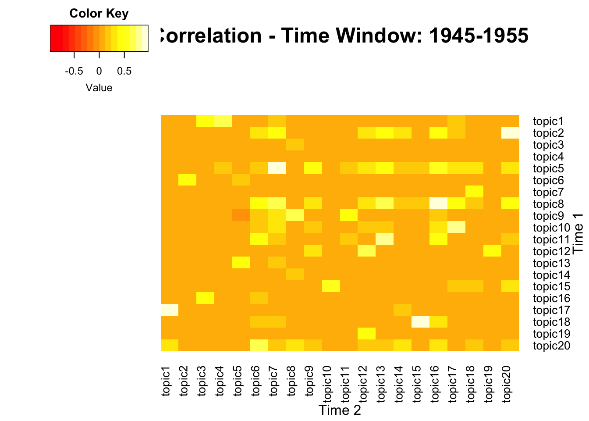
Model 1 - Topic 17
Model 2 - Topic 1
Model 1 - Topic 5
Model 2 - Topic 7
Model 1 - Topic 11
Model 2 - Topic 13
Model 1 - Topic 18
Model 2 - Topic 15
Model 1 - Topic 8
Model 2 - Topic 16
Model 1 - Topic 2
Model 2 - Topic 20
|term_1 | probability_1|term_2 | probability_2|
|:---------|-------------:|:---------|-------------:|
|africa | 0.0459586|africa | 0.0700873|
|south | 0.0293256|south | 0.0489735|
|african | 0.0233852|african | 0.0473263|
|therefor | 0.0119005|contin | 0.0122864|
|san | 0.0101184|ghana | 0.0113880|
|francisco | 0.0093264|territori | 0.0106393|
|ethiopia | 0.0079403|union | 0.0094413|
|union | 0.0073462|govern | 0.0086926|
|affair | 0.0067522|portugues | 0.0069705|
|liberia | 0.0063562|deleg | 0.0068957|
|unit | 0.0315375|state | 0.0299568|
|state | 0.0308162|unit | 0.0286828|
|war | 0.0225153|peac | 0.0200478|
|peac | 0.0192990|soviet | 0.0181334|
|soviet | 0.0174543|peopl | 0.0173448|
|peopl | 0.0146637|war | 0.0152282|
|union | 0.0123225|intern | 0.0114803|
|countri | 0.0110336|countri | 0.0112241|
|atom | 0.0107261|union | 0.0107860|
|propos | 0.0103477|propos | 0.0097748|
|us | 0.0190152|unit | 0.0179821|
|can | 0.0158066|nation | 0.0148282|
|one | 0.0151200|one | 0.0141094|
|world | 0.0115285|us | 0.0130674|
|may | 0.0110135|world | 0.0116576|
|year | 0.0093102|can | 0.0110391|
|now | 0.0089933|time | 0.0074227|
|make | 0.0087424|countri | 0.0073113|
|say | 0.0085708|war | 0.0064755|
|time | 0.0081746|say | 0.0064755|
|econom | 0.0514552|econom | 0.0444097|
|develop | 0.0398037|countri | 0.0442355|
|countri | 0.0342809|develop | 0.0380907|
|social | 0.0234846|industri | 0.0146805|
|product | 0.0110849|product | 0.0129639|
|intern | 0.0106217|social | 0.0114712|
|technic | 0.0100872|economi | 0.0100283|
|industri | 0.0086976|capit | 0.0098790|
|trade | 0.0084482|assist | 0.0089337|
|programm | 0.0083769|trade | 0.0088839|
|nation | 0.0289872|nation | 0.0246015|
|unit | 0.0223228|unit | 0.0176089|
|peac | 0.0131717|intern | 0.0113466|
|intern | 0.0107497|peac | 0.0099749|
|state | 0.0099598|countri | 0.0099261|
|general | 0.0088213|problem | 0.0094085|
|organ | 0.0085591|general | 0.0089082|
|problem | 0.0084881|world | 0.0087444|
|world | 0.0084387|govern | 0.0080978|
|countri | 0.0078710|state | 0.0074791|
|peopl | 0.0287013|peopl | 0.0269464|
|world | 0.0280271|human | 0.0182676|
|nation | 0.0268360|world | 0.0174270|
|peac | 0.0199365|peac | 0.0167340|
|human | 0.0176892|nation | 0.0155640|
|freedom | 0.0175768|right | 0.0143712|
|right | 0.0146777|freedom | 0.0124628|
|charter | 0.0111942|power | 0.0095660|
|war | 0.0103852|war | 0.0087709|
|live | 0.0086771|justic | 0.0074418|
NULL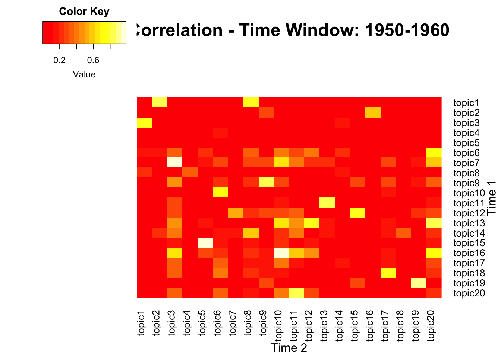
Model 1 - Topic 1
Model 2 - Topic 2
Model 1 - Topic 7
Model 2 - Topic 3
Model 1 - Topic 15
Model 2 - Topic 5
Model 1 - Topic 9
Model 2 - Topic 9
Model 1 - Topic 16
Model 2 - Topic 10
Model 1 - Topic 20
Model 2 - Topic 11
Model 1 - Topic 11
Model 2 - Topic 13
Model 1 - Topic 19
Model 2 - Topic 19
Model 1 - Topic 13
Model 2 - Topic 20
|term_1 | probability_1|term_2 | probability_2|
|:---------|-------------:|:---------|-------------:|
|africa | 0.0700873|south | 0.0465195|
|south | 0.0489735|africa | 0.0372389|
|african | 0.0473263|african | 0.0143432|
|contin | 0.0122864|bantu | 0.0128983|
|ghana | 0.0113880|italian | 0.0123426|
|territori | 0.0106393|also | 0.0090638|
|union | 0.0094413|indian | 0.0087860|
|govern | 0.0086926|austrian | 0.0082302|
|portugues | 0.0069705|committe | 0.0081191|
|deleg | 0.0068957|itali | 0.0072299|
|state | 0.0299568|state | 0.0304248|
|unit | 0.0286828|unit | 0.0247040|
|peac | 0.0200478|peopl | 0.0209496|
|soviet | 0.0181334|peac | 0.0157150|
|peopl | 0.0173448|countri | 0.0132355|
|war | 0.0152282|soviet | 0.0128844|
|intern | 0.0114803|republ | 0.0118472|
|countri | 0.0112241|war | 0.0101996|
|union | 0.0107860|govern | 0.0100375|
|propos | 0.0097748|intern | 0.0090814|
|econom | 0.0444097|develop | 0.0513149|
|countri | 0.0442355|countri | 0.0487416|
|develop | 0.0380907|econom | 0.0379446|
|industri | 0.0146805|industri | 0.0152039|
|product | 0.0129639|trade | 0.0130081|
|social | 0.0114712|social | 0.0115676|
|economi | 0.0100283|product | 0.0102249|
|capit | 0.0098790|resourc | 0.0096096|
|assist | 0.0089337|assist | 0.0091341|
|trade | 0.0088839|economi | 0.0086585|
|state | 0.0401327|lebanon | 0.0197833|
|unit | 0.0256348|kingdom | 0.0187388|
|jordan | 0.0197039|jordan | 0.0181817|
|arab | 0.0181662|withdraw | 0.0172764|
|withdraw | 0.0179466|troop | 0.0156748|
|lebanon | 0.0179466|state | 0.0146303|
|troop | 0.0170679|east | 0.0144214|
|govern | 0.0164821|unit | 0.0121234|
|east | 0.0149445|island | 0.0117753|
|kingdom | 0.0146516|arab | 0.0113575|
|nation | 0.0246015|nation | 0.0233570|
|unit | 0.0176089|unit | 0.0186110|
|intern | 0.0113466|intern | 0.0116361|
|peac | 0.0099749|peac | 0.0112640|
|countri | 0.0099261|general | 0.0101358|
|problem | 0.0094085|problem | 0.0088378|
|general | 0.0089082|countri | 0.0086619|
|world | 0.0087444|world | 0.0084513|
|govern | 0.0080978|assembl | 0.0080398|
|state | 0.0074791|state | 0.0073423|
|peopl | 0.0269464|nation | 0.0463380|
|human | 0.0182676|peopl | 0.0380270|
|world | 0.0174270|world | 0.0252999|
|peac | 0.0167340|peac | 0.0185384|
|nation | 0.0155640|unit | 0.0163128|
|right | 0.0143712|right | 0.0140308|
|freedom | 0.0124628|freedom | 0.0140026|
|power | 0.0095660|human | 0.0121643|
|war | 0.0087709|coloni | 0.0110163|
|justic | 0.0074418|independ | 0.0108261|
|disarma | 0.0520240|nuclear | 0.0459831|
|nuclear | 0.0309611|disarma | 0.0308417|
|weapon | 0.0208961|test | 0.0259748|
|agreement | 0.0208678|weapon | 0.0214192|
|control | 0.0189171|agreement | 0.0165523|
|test | 0.0167966|power | 0.0157658|
|propos | 0.0152416|control | 0.0109317|
|soviet | 0.0145348|treati | 0.0097518|
|power | 0.0131778|negoti | 0.0094568|
|committe | 0.0115097|space | 0.0091127|
|egypt | 0.0408066|egypt | 0.0306829|
|canal | 0.0273553|canal | 0.0286886|
|hungari | 0.0262715|hungari | 0.0283953|
|israel | 0.0242315|middl | 0.0242894|
|middl | 0.0236577|hungarian | 0.0229990|
|hungarian | 0.0234027|east | 0.0219432|
|east | 0.0193865|soviet | 0.0188344|
|egyptian | 0.0186852|suez | 0.0174853|
|suez | 0.0180477|forc | 0.0167228|
|forc | 0.0149239|egyptian | 0.0123236|
|unit | 0.0179821|unit | 0.0213286|
|nation | 0.0148282|nation | 0.0123500|
|one | 0.0141094|one | 0.0116141|
|us | 0.0130674|assembl | 0.0108782|
|world | 0.0116576|govern | 0.0106883|
|can | 0.0110391|countri | 0.0096795|
|time | 0.0074227|year | 0.0095846|
|countri | 0.0073113|state | 0.0088724|
|war | 0.0064755|world | 0.0082612|
|say | 0.0064755|say | 0.0080238|
NULL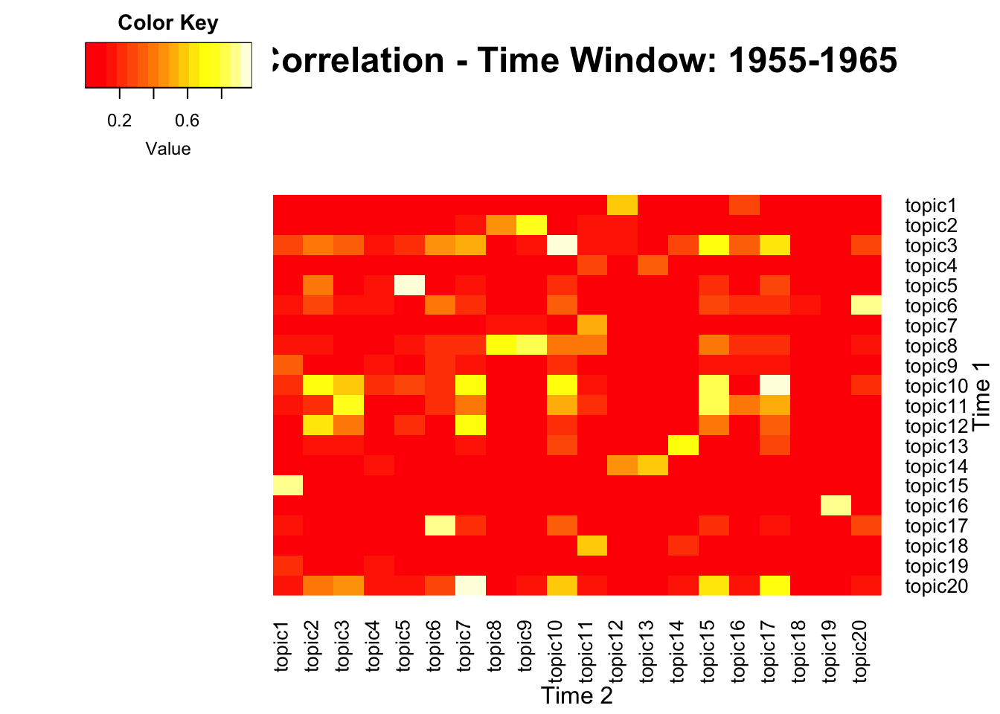
Model 1 - Topic 15
Model 2 - Topic 1
Model 1 - Topic 5
Model 2 - Topic 5
Model 1 - Topic 17
Model 2 - Topic 6
Model 1 - Topic 20
Model 2 - Topic 7
Model 1 - Topic 8
Model 2 - Topic 9
Model 1 - Topic 3
Model 2 - Topic 10
Model 1 - Topic 10
Model 2 - Topic 15
Model 1 - Topic 10
Model 2 - Topic 17
Model 1 - Topic 16
Model 2 - Topic 19
Model 1 - Topic 6
Model 2 - Topic 20
|term_1 | probability_1|term_2 | probability_2|
|:-------------|-------------:|:-------------|-------------:|
|arab | 0.0765870|arab | 0.0489459|
|israel | 0.0408408|israel | 0.0368051|
|palestin | 0.0347244|palestin | 0.0183239|
|refuge | 0.0190121|middl | 0.0136678|
|east | 0.0141776|aggress | 0.0135725|
|middl | 0.0141044|state | 0.0135248|
|question | 0.0106982|east | 0.0123648|
|resolut | 0.0100023|territori | 0.0122853|
|aggress | 0.0076950|resolut | 0.0104738|
|land | 0.0069258|secur | 0.0096315|
|develop | 0.0513149|develop | 0.0691097|
|countri | 0.0487416|countri | 0.0645105|
|econom | 0.0379446|econom | 0.0259986|
|industri | 0.0152039|industri | 0.0154084|
|trade | 0.0130081|trade | 0.0143918|
|social | 0.0115676|product | 0.0127457|
|product | 0.0102249|resourc | 0.0107124|
|resourc | 0.0096096|year | 0.0105309|
|assist | 0.0091341|per | 0.0101799|
|economi | 0.0086585|assist | 0.0093569|
|cuba | 0.0469890|cuba | 0.0376446|
|cuban | 0.0277799|state | 0.0313469|
|state | 0.0216083|cuban | 0.0200208|
|unit | 0.0167482|govern | 0.0187515|
|govern | 0.0162853|unit | 0.0182145|
|america | 0.0098823|peopl | 0.0132349|
|revolutionari | 0.0096508|latin | 0.0128932|
|latin | 0.0089565|aggress | 0.0116239|
|monopoli | 0.0073365|america | 0.0112333|
|revolut | 0.0070279|revolutionari | 0.0102569|
|unit | 0.0213286|unit | 0.0175598|
|nation | 0.0123500|one | 0.0131354|
|one | 0.0116141|state | 0.0108427|
|assembl | 0.0108782|nation | 0.0104133|
|govern | 0.0106883|countri | 0.0087763|
|countri | 0.0096795|us | 0.0087111|
|year | 0.0095846|assembl | 0.0078906|
|state | 0.0088724|say | 0.0076414|
|world | 0.0082612|can | 0.0073539|
|say | 0.0080238|govern | 0.0073270|
|africa | 0.0406909|africa | 0.0619609|
|african | 0.0399522|south | 0.0451048|
|south | 0.0206354|african | 0.0322321|
|govern | 0.0203399|govern | 0.0200722|
|coloni | 0.0193919|rhodesia | 0.0182971|
|state | 0.0168188|southern | 0.0166199|
|peopl | 0.0143319|territori | 0.0156555|
|countri | 0.0131130|coloni | 0.0122591|
|independ | 0.0127683|independ | 0.0114764|
|republ | 0.0119927|polici | 0.0106238|
|state | 0.0304248|state | 0.0316141|
|unit | 0.0247040|unit | 0.0248032|
|peopl | 0.0209496|peopl | 0.0210065|
|peac | 0.0157150|peac | 0.0168020|
|countri | 0.0132355|nation | 0.0145702|
|soviet | 0.0128844|republ | 0.0143388|
|republ | 0.0118472|countri | 0.0125424|
|war | 0.0101996|intern | 0.0093132|
|govern | 0.0100375|coloni | 0.0091865|
|intern | 0.0090814|war | 0.0091149|
|nation | 0.0233570|nation | 0.0275837|
|unit | 0.0186110|peopl | 0.0273210|
|intern | 0.0116361|unit | 0.0215575|
|peac | 0.0112640|countri | 0.0176144|
|general | 0.0101358|world | 0.0126329|
|problem | 0.0088378|peac | 0.0105376|
|countri | 0.0086619|right | 0.0103116|
|world | 0.0084513|organ | 0.0101619|
|assembl | 0.0080398|state | 0.0094778|
|state | 0.0073423|govern | 0.0092060|
|nation | 0.0233570|nation | 0.0247828|
|unit | 0.0186110|unit | 0.0205034|
|intern | 0.0116361|peac | 0.0120503|
|peac | 0.0112640|general | 0.0109044|
|general | 0.0101358|develop | 0.0097600|
|problem | 0.0088378|intern | 0.0096166|
|countri | 0.0086619|assembl | 0.0091563|
|world | 0.0084513|organ | 0.0085069|
|assembl | 0.0080398|problem | 0.0081618|
|state | 0.0073423|world | 0.0073437|
|cyprus | 0.0640123|cyprus | 0.0652211|
|turkish | 0.0278383|turkish | 0.0244363|
|turkey | 0.0272334|turkey | 0.0232842|
|greec | 0.0240878|greek | 0.0197127|
|greek | 0.0228780|greec | 0.0195975|
|somali | 0.0157399|malawi | 0.0189062|
|cypriot | 0.0139252|iran | 0.0141825|
|island | 0.0095698|malta | 0.0118783|
|communiti | 0.0082390|island | 0.0089980|
|minor | 0.0076340|cypriot | 0.0077307|
|american | 0.0287376|american | 0.0321881|
|state | 0.0197103|latin | 0.0228104|
|america | 0.0158970|america | 0.0210642|
|latin | 0.0128814|state | 0.0194258|
|intern | 0.0094767|law | 0.0094014|
|system | 0.0091265|intern | 0.0084960|
|human | 0.0082121|system | 0.0083666|
|law | 0.0079008|principl | 0.0073750|
|principl | 0.0065001|region | 0.0069438|
|govern | 0.0062471|central | 0.0069438|
NULL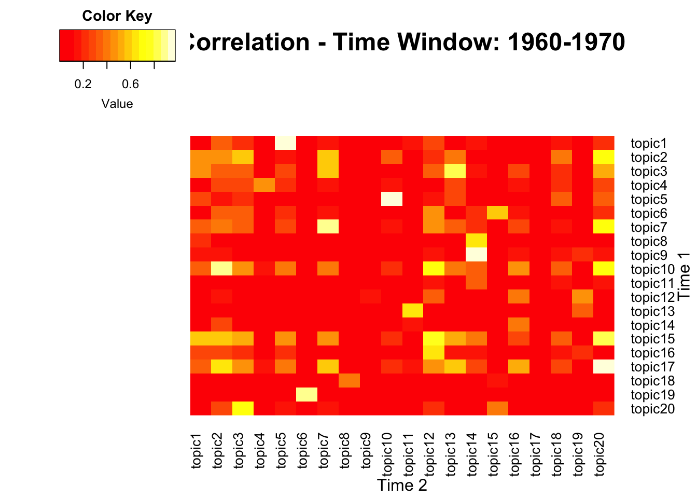
Model 1 - Topic 10
Model 2 - Topic 2
Model 1 - Topic 1
Model 2 - Topic 5
Model 1 - Topic 19
Model 2 - Topic 6
Model 1 - Topic 7
Model 2 - Topic 7
Model 1 - Topic 5
Model 2 - Topic 10
Model 1 - Topic 9
Model 2 - Topic 14
Model 1 - Topic 15
Model 2 - Topic 20
Model 1 - Topic 17
Model 2 - Topic 20
|term_1 | probability_1|term_2 | probability_2|
|:---------|-------------:|:---------|-------------:|
|state | 0.0316141|state | 0.0288911|
|unit | 0.0248032|peac | 0.0158065|
|peopl | 0.0210065|republ | 0.0157713|
|peac | 0.0168020|unit | 0.0152214|
|nation | 0.0145702|soviet | 0.0136916|
|republ | 0.0143388|intern | 0.0130218|
|countri | 0.0125424|secur | 0.0129090|
|intern | 0.0093132|peopl | 0.0128033|
|coloni | 0.0091865|europ | 0.0108646|
|war | 0.0091149|nation | 0.0101173|
|arab | 0.0489459|arab | 0.0342418|
|israel | 0.0368051|israel | 0.0336268|
|palestin | 0.0183239|peopl | 0.0158220|
|middl | 0.0136678|unit | 0.0137786|
|aggress | 0.0135725|resolut | 0.0136993|
|state | 0.0135248|territori | 0.0130843|
|east | 0.0123648|right | 0.0125288|
|territori | 0.0122853|palestin | 0.0122511|
|resolut | 0.0104738|state | 0.0118642|
|secur | 0.0096315|peac | 0.0113088|
|cyprus | 0.0652211|cyprus | 0.0855891|
|turkish | 0.0244363|turkey | 0.0304596|
|turkey | 0.0232842|turkish | 0.0287296|
|greek | 0.0197127|greek | 0.0251543|
|greec | 0.0195975|greec | 0.0211176|
|malawi | 0.0189062|island | 0.0190416|
|iran | 0.0141825|cypriot | 0.0162736|
|malta | 0.0118783|coup | 0.0042789|
|island | 0.0089980|mediat | 0.0041635|
|cypriot | 0.0077307|partit | 0.0040482|
|unit | 0.0175598|one | 0.0142671|
|one | 0.0131354|can | 0.0113130|
|state | 0.0108427|nation | 0.0107548|
|nation | 0.0104133|us | 0.0086788|
|countri | 0.0087763|war | 0.0082976|
|us | 0.0087111|year | 0.0076306|
|assembl | 0.0078906|state | 0.0075829|
|say | 0.0076414|time | 0.0073958|
|can | 0.0073539|world | 0.0069840|
|govern | 0.0073270|even | 0.0068682|
|develop | 0.0691097|countri | 0.0712858|
|countri | 0.0645105|develop | 0.0709039|
|econom | 0.0259986|econom | 0.0219301|
|industri | 0.0154084|product | 0.0153756|
|trade | 0.0143918|industri | 0.0144974|
|product | 0.0127457|per | 0.0141920|
|resourc | 0.0107124|trade | 0.0137593|
|year | 0.0105309|cent | 0.0122066|
|per | 0.0101799|price | 0.0118375|
|assist | 0.0093569|export | 0.0085284|
|africa | 0.0619609|africa | 0.0475235|
|south | 0.0451048|african | 0.0293671|
|african | 0.0322321|south | 0.0286688|
|govern | 0.0200722|govern | 0.0178357|
|rhodesia | 0.0182971|coloni | 0.0140776|
|southern | 0.0166199|southern | 0.0134344|
|territori | 0.0156555|peopl | 0.0126993|
|coloni | 0.0122591|deleg | 0.0126258|
|independ | 0.0114764|rhodesia | 0.0124237|
|polici | 0.0106238|independ | 0.0117070|
|nation | 0.0275837|nation | 0.0222990|
|peopl | 0.0273210|unit | 0.0161534|
|unit | 0.0215575|intern | 0.0137996|
|countri | 0.0176144|countri | 0.0127968|
|world | 0.0126329|peac | 0.0117210|
|peac | 0.0105376|develop | 0.0110025|
|right | 0.0103116|general | 0.0099226|
|organ | 0.0101619|problem | 0.0096524|
|state | 0.0094778|world | 0.0084045|
|govern | 0.0092060|organ | 0.0081383|
|nation | 0.0247828|nation | 0.0222990|
|unit | 0.0205034|unit | 0.0161534|
|peac | 0.0120503|intern | 0.0137996|
|general | 0.0109044|countri | 0.0127968|
|develop | 0.0097600|peac | 0.0117210|
|intern | 0.0096166|develop | 0.0110025|
|assembl | 0.0091563|general | 0.0099226|
|organ | 0.0085069|problem | 0.0096524|
|problem | 0.0081618|world | 0.0084045|
|world | 0.0073437|organ | 0.0081383|
NULL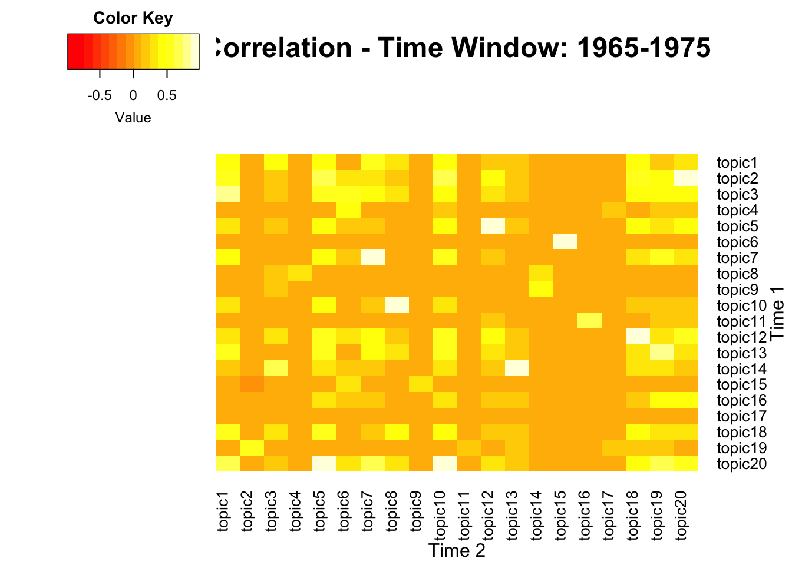
Model 1 - Topic 20
Model 2 - Topic 5
Model 1 - Topic 7
Model 2 - Topic 7
Model 1 - Topic 10
Model 2 - Topic 8
Model 1 - Topic 20
Model 2 - Topic 10
Model 1 - Topic 5
Model 2 - Topic 12
Model 1 - Topic 14
Model 2 - Topic 13
Model 1 - Topic 6
Model 2 - Topic 15
Model 1 - Topic 12
Model 2 - Topic 18
Model 1 - Topic 2
Model 2 - Topic 20
|term_1 | probability_1|term_2 | probability_2|
|:---------|-------------:|:-----------|-------------:|
|nation | 0.0222990|intern | 0.0196868|
|unit | 0.0161534|countri | 0.0175200|
|intern | 0.0137996|nation | 0.0143089|
|countri | 0.0127968|peac | 0.0112745|
|peac | 0.0117210|develop | 0.0107177|
|develop | 0.0110025|unit | 0.0106662|
|general | 0.0099226|peopl | 0.0092830|
|problem | 0.0096524|econom | 0.0092653|
|world | 0.0084045|general | 0.0091239|
|organ | 0.0081383|session | 0.0086010|
|one | 0.0142671|one | 0.0112903|
|can | 0.0113130|us | 0.0100930|
|nation | 0.0107548|can | 0.0091029|
|us | 0.0086788|world | 0.0087780|
|war | 0.0082976|countri | 0.0066315|
|year | 0.0076306|nation | 0.0063885|
|state | 0.0075829|time | 0.0060840|
|time | 0.0073958|power | 0.0058794|
|world | 0.0069840|organ | 0.0057515|
|even | 0.0068682|year | 0.0056031|
|countri | 0.0712858|countri | 0.0656566|
|develop | 0.0709039|develop | 0.0537682|
|econom | 0.0219301|world | 0.0239247|
|product | 0.0153756|econom | 0.0230343|
|industri | 0.0144974|industri | 0.0141595|
|per | 0.0141920|product | 0.0139442|
|trade | 0.0137593|price | 0.0126037|
|cent | 0.0122066|third | 0.0117231|
|price | 0.0118375|per | 0.0114785|
|export | 0.0085284|trade | 0.0103043|
|nation | 0.0222990|nation | 0.0265351|
|unit | 0.0161534|unit | 0.0232438|
|intern | 0.0137996|intern | 0.0152202|
|countri | 0.0127968|countri | 0.0120156|
|peac | 0.0117210|peac | 0.0114908|
|develop | 0.0110025|general | 0.0101787|
|general | 0.0099226|develop | 0.0101142|
|problem | 0.0096524|state | 0.0098296|
|world | 0.0084045|organ | 0.0096339|
|organ | 0.0081383|govern | 0.0087510|
|arab | 0.0342418|arab | 0.0314253|
|israel | 0.0336268|israel | 0.0298593|
|peopl | 0.0158220|palestinian | 0.0168720|
|unit | 0.0137786|peac | 0.0140115|
|resolut | 0.0136993|unit | 0.0128839|
|territori | 0.0130843|resolut | 0.0128109|
|right | 0.0125288|state | 0.0126751|
|palestin | 0.0122511|isra | 0.0118817|
|state | 0.0118642|peopl | 0.0113806|
|peac | 0.0113088|right | 0.0111927|
|africa | 0.0475235|africa | 0.0523775|
|african | 0.0293671|south | 0.0324719|
|south | 0.0286688|african | 0.0257276|
|govern | 0.0178357|regim | 0.0135014|
|coloni | 0.0140776|southern | 0.0120053|
|southern | 0.0134344|namibia | 0.0107546|
|peopl | 0.0126993|peopl | 0.0104858|
|deleg | 0.0126258|racist | 0.0091767|
|rhodesia | 0.0124237|apartheid | 0.0091767|
|independ | 0.0117070|continu | 0.0089897|
|cyprus | 0.0855891|cyprus | 0.0905177|
|turkey | 0.0304596|turkish | 0.0316189|
|turkish | 0.0287296|turkey | 0.0272968|
|greek | 0.0251543|cypriot | 0.0252629|
|greec | 0.0211176|greek | 0.0188222|
|island | 0.0190416|greec | 0.0134832|
|cypriot | 0.0162736|island | 0.0114492|
|coup | 0.0042789|talk | 0.0053475|
|mediat | 0.0041635|troop | 0.0052628|
|partit | 0.0040482|coup | 0.0047543|
|peopl | 0.0479225|peopl | 0.0522320|
|unit | 0.0253805|countri | 0.0193436|
|state | 0.0202448|struggl | 0.0175661|
|countri | 0.0184064|independ | 0.0122458|
|viet | 0.0159041|aggress | 0.0111423|
|nation | 0.0145837|unit | 0.0108322|
|aggress | 0.0144962|state | 0.0107785|
|struggl | 0.0121763|world | 0.0106175|
|nam | 0.0119866|power | 0.0103073|
|republ | 0.0107902|nation | 0.0098838|
|state | 0.0288911|state | 0.0237134|
|peac | 0.0158065|peac | 0.0166330|
|republ | 0.0157713|soviet | 0.0139265|
|unit | 0.0152214|intern | 0.0114020|
|soviet | 0.0136916|republ | 0.0112728|
|intern | 0.0130218|nuclear | 0.0110439|
|secur | 0.0129090|unit | 0.0101926|
|peopl | 0.0128033|secur | 0.0100047|
|europ | 0.0108646|peopl | 0.0099988|
|nation | 0.0101173|relat | 0.0099519|
NULL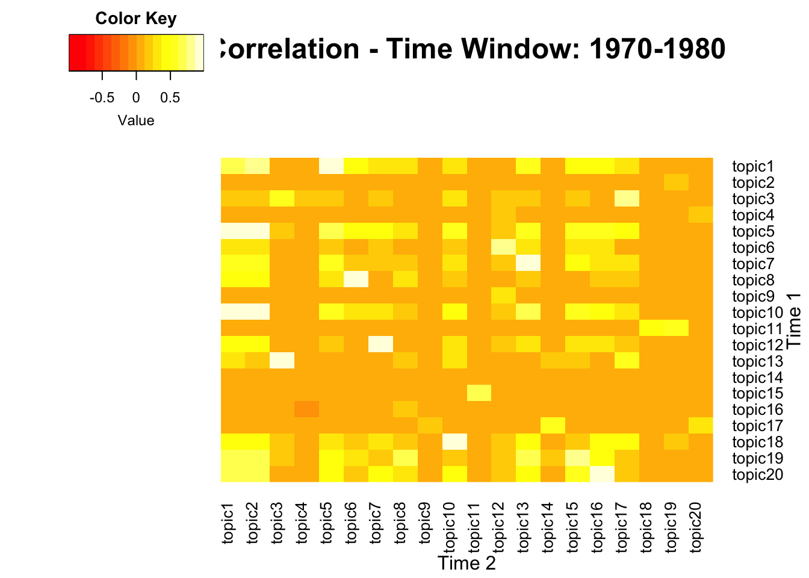
Model 1 - Topic 5
Model 2 - Topic 1
Model 1 - Topic 10
Model 2 - Topic 1
Model 1 - Topic 5
Model 2 - Topic 2
Model 1 - Topic 10
Model 2 - Topic 2
Model 1 - Topic 13
Model 2 - Topic 3
Model 1 - Topic 1
Model 2 - Topic 5
Model 1 - Topic 8
Model 2 - Topic 6
Model 1 - Topic 12
Model 2 - Topic 7
Model 1 - Topic 18
Model 2 - Topic 10
Model 1 - Topic 7
Model 2 - Topic 13
Model 1 - Topic 19
Model 2 - Topic 15
Model 1 - Topic 20
Model 2 - Topic 16
Model 1 - Topic 3
Model 2 - Topic 17
|term_1 | probability_1|term_2 | probability_2|
|:-----------|-------------:|:-----------|-------------:|
|intern | 0.0196868|intern | 0.0218552|
|countri | 0.0175200|countri | 0.0170485|
|nation | 0.0143089|nation | 0.0169777|
|peac | 0.0112745|peac | 0.0145907|
|develop | 0.0107177|unit | 0.0130544|
|unit | 0.0106662|develop | 0.0111082|
|peopl | 0.0092830|state | 0.0107889|
|econom | 0.0092653|econom | 0.0090912|
|general | 0.0091239|secur | 0.0090005|
|session | 0.0086010|peopl | 0.0084581|
|nation | 0.0265351|intern | 0.0218552|
|unit | 0.0232438|countri | 0.0170485|
|intern | 0.0152202|nation | 0.0169777|
|countri | 0.0120156|peac | 0.0145907|
|peac | 0.0114908|unit | 0.0130544|
|general | 0.0101787|develop | 0.0111082|
|develop | 0.0101142|state | 0.0107889|
|state | 0.0098296|econom | 0.0090912|
|organ | 0.0096339|secur | 0.0090005|
|govern | 0.0087510|peopl | 0.0084581|
|intern | 0.0196868|nation | 0.0199418|
|countri | 0.0175200|intern | 0.0196233|
|nation | 0.0143089|countri | 0.0157715|
|peac | 0.0112745|unit | 0.0133159|
|develop | 0.0107177|develop | 0.0126546|
|unit | 0.0106662|peac | 0.0111415|
|peopl | 0.0092830|general | 0.0100699|
|econom | 0.0092653|econom | 0.0098925|
|general | 0.0091239|state | 0.0095281|
|session | 0.0086010|world | 0.0086653|
|nation | 0.0265351|nation | 0.0199418|
|unit | 0.0232438|intern | 0.0196233|
|intern | 0.0152202|countri | 0.0157715|
|countri | 0.0120156|unit | 0.0133159|
|peac | 0.0114908|develop | 0.0126546|
|general | 0.0101787|peac | 0.0111415|
|develop | 0.0101142|general | 0.0100699|
|state | 0.0098296|econom | 0.0098925|
|organ | 0.0096339|state | 0.0095281|
|govern | 0.0087510|world | 0.0086653|
|africa | 0.0523775|africa | 0.0676050|
|south | 0.0324719|south | 0.0411978|
|african | 0.0257276|african | 0.0285275|
|regim | 0.0135014|namibia | 0.0188718|
|southern | 0.0120053|regim | 0.0184452|
|namibia | 0.0107546|apartheid | 0.0138378|
|peopl | 0.0104858|southern | 0.0137241|
|racist | 0.0091767|racist | 0.0119892|
|apartheid | 0.0091767|zimbabw | 0.0109511|
|continu | 0.0089897|govern | 0.0091167|
|intern | 0.0192422|intern | 0.0152884|
|nation | 0.0115799|countri | 0.0097935|
|world | 0.0104361|polit | 0.0094705|
|econom | 0.0097976|right | 0.0083363|
|countri | 0.0093745|peopl | 0.0073159|
|new | 0.0093432|peac | 0.0065671|
|develop | 0.0092452|relat | 0.0058256|
|polit | 0.0091904|order | 0.0058219|
|right | 0.0071651|possibl | 0.0055613|
|social | 0.0062406|new | 0.0054586|
|countri | 0.0656566|countri | 0.0587024|
|develop | 0.0537682|develop | 0.0570978|
|world | 0.0239247|world | 0.0251663|
|econom | 0.0230343|econom | 0.0222870|
|industri | 0.0141595|industri | 0.0158240|
|product | 0.0139442|product | 0.0134884|
|price | 0.0126037|per | 0.0125702|
|third | 0.0117231|third | 0.0114738|
|per | 0.0114785|trade | 0.0113044|
|trade | 0.0103043|economi | 0.0112242|
|arab | 0.0314253|arab | 0.0286628|
|israel | 0.0298593|israel | 0.0243131|
|palestinian | 0.0168720|palestinian | 0.0179918|
|peac | 0.0140115|peac | 0.0126859|
|unit | 0.0128839|state | 0.0120681|
|resolut | 0.0128109|resolut | 0.0112727|
|state | 0.0126751|lebanon | 0.0107903|
|isra | 0.0118817|isra | 0.0103164|
|peopl | 0.0113806|peopl | 0.0095887|
|right | 0.0111927|palestin | 0.0092333|
|peopl | 0.0522320|peopl | 0.0550125|
|countri | 0.0193436|countri | 0.0203704|
|struggl | 0.0175661|struggl | 0.0180942|
|independ | 0.0122458|independ | 0.0150592|
|aggress | 0.0111423|aggress | 0.0114150|
|unit | 0.0108322|support | 0.0102243|
|state | 0.0107785|unit | 0.0099197|
|world | 0.0106175|state | 0.0098532|
|power | 0.0103073|republ | 0.0096372|
|nation | 0.0098838|coloni | 0.0091720|
|one | 0.0112903|nation | 0.0182031|
|us | 0.0100930|world | 0.0171745|
|can | 0.0091029|one | 0.0104463|
|world | 0.0087780|unit | 0.0100976|
|countri | 0.0066315|us | 0.0099069|
|nation | 0.0063885|can | 0.0089662|
|time | 0.0060840|state | 0.0079652|
|power | 0.0058794|year | 0.0076266|
|organ | 0.0057515|power | 0.0070145|
|year | 0.0056031|time | 0.0064475|
|nation | 0.0158285|unit | 0.0118983|
|unit | 0.0125018|right | 0.0107424|
|world | 0.0100405|human | 0.0105631|
|nuclear | 0.0099022|govern | 0.0093408|
|develop | 0.0098526|negoti | 0.0091747|
|new | 0.0081148|nuclear | 0.0091215|
|can | 0.0077743|communiti | 0.0080188|
|year | 0.0076431|import | 0.0079524|
|govern | 0.0073310|can | 0.0068696|
|human | 0.0072175|nation | 0.0066902|
|state | 0.0237134|state | 0.0267879|
|peac | 0.0166330|nuclear | 0.0202873|
|soviet | 0.0139265|soviet | 0.0153564|
|intern | 0.0114020|peac | 0.0151826|
|republ | 0.0112728|weapon | 0.0149190|
|nuclear | 0.0110439|unit | 0.0117616|
|unit | 0.0101926|republ | 0.0105394|
|secur | 0.0100047|union | 0.0101439|
|peopl | 0.0099988|arm | 0.0096766|
|relat | 0.0099519|peopl | 0.0093471|
|african | 0.0220758|peopl | 0.0179513|
|africa | 0.0208161|african | 0.0165655|
|republ | 0.0129432|africa | 0.0134841|
|peopl | 0.0122083|republ | 0.0106472|
|territori | 0.0100639|organ | 0.0084788|
|guinea | 0.0094940|countri | 0.0073864|
|south | 0.0079944|oau | 0.0066935|
|oau | 0.0078445|deleg | 0.0063593|
|govern | 0.0075595|chad | 0.0058457|
|sahara | 0.0071846|sahara | 0.0056175|
NULL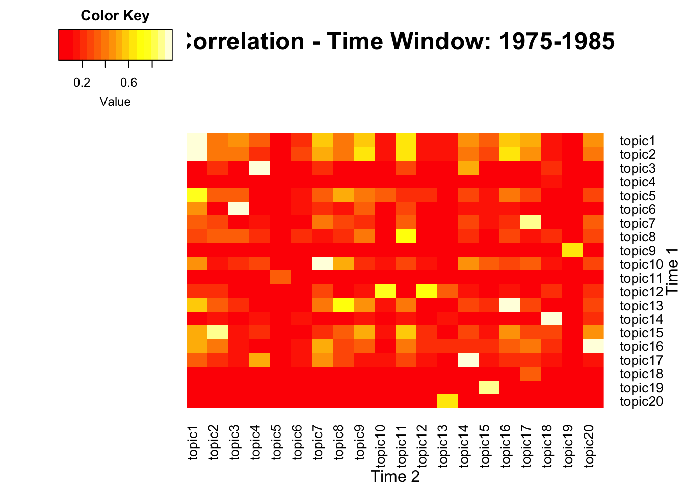
Model 1 - Topic 1
Model 2 - Topic 1
Model 1 - Topic 2
Model 2 - Topic 1
Model 1 - Topic 15
Model 2 - Topic 2
Model 1 - Topic 6
Model 2 - Topic 3
Model 1 - Topic 3
Model 2 - Topic 4
Model 1 - Topic 10
Model 2 - Topic 7
Model 1 - Topic 17
Model 2 - Topic 14
Model 1 - Topic 19
Model 2 - Topic 15
Model 1 - Topic 13
Model 2 - Topic 16
Model 1 - Topic 7
Model 2 - Topic 17
Model 1 - Topic 14
Model 2 - Topic 18
Model 1 - Topic 16
Model 2 - Topic 20
|term_1 | probability_1|term_2 | probability_2|
|:-----------|-------------:|:-----------|-------------:|
|intern | 0.0218552|intern | 0.0245184|
|countri | 0.0170485|countri | 0.0187666|
|nation | 0.0169777|nation | 0.0183613|
|peac | 0.0145907|peac | 0.0134369|
|unit | 0.0130544|develop | 0.0117095|
|develop | 0.0111082|unit | 0.0113202|
|state | 0.0107889|state | 0.0102750|
|econom | 0.0090912|econom | 0.0098346|
|secur | 0.0090005|peopl | 0.0094500|
|peopl | 0.0084581|world | 0.0088787|
|nation | 0.0199418|intern | 0.0245184|
|intern | 0.0196233|countri | 0.0187666|
|countri | 0.0157715|nation | 0.0183613|
|unit | 0.0133159|peac | 0.0134369|
|develop | 0.0126546|develop | 0.0117095|
|peac | 0.0111415|unit | 0.0113202|
|general | 0.0100699|state | 0.0102750|
|econom | 0.0098925|econom | 0.0098346|
|state | 0.0095281|peopl | 0.0094500|
|world | 0.0086653|world | 0.0088787|
|unit | 0.0118983|human | 0.0124731|
|right | 0.0107424|right | 0.0124216|
|human | 0.0105631|european | 0.0107489|
|govern | 0.0093408|europ | 0.0105345|
|negoti | 0.0091747|unit | 0.0100970|
|nuclear | 0.0091215|import | 0.0090076|
|communiti | 0.0080188|govern | 0.0089132|
|import | 0.0079524|secur | 0.0088189|
|can | 0.0068696|communiti | 0.0087503|
|nation | 0.0066902|negoti | 0.0084586|
|countri | 0.0587024|countri | 0.0530208|
|develop | 0.0570978|develop | 0.0492417|
|world | 0.0251663|econom | 0.0237739|
|econom | 0.0222870|world | 0.0205835|
|industri | 0.0158240|debt | 0.0155472|
|product | 0.0134884|trade | 0.0137968|
|per | 0.0125702|economi | 0.0122295|
|third | 0.0114738|per | 0.0118157|
|trade | 0.0113044|industri | 0.0116407|
|economi | 0.0112242|product | 0.0113145|
|africa | 0.0676050|africa | 0.0617391|
|south | 0.0411978|south | 0.0426253|
|african | 0.0285275|african | 0.0301059|
|namibia | 0.0188718|apartheid | 0.0175865|
|regim | 0.0184452|regim | 0.0135692|
|apartheid | 0.0138378|namibia | 0.0135313|
|southern | 0.0137241|govern | 0.0123311|
|racist | 0.0119892|econom | 0.0121922|
|zimbabw | 0.0109511|continu | 0.0096024|
|govern | 0.0091167|communiti | 0.0087939|
|peopl | 0.0550125|peopl | 0.0446734|
|countri | 0.0203704|countri | 0.0212867|
|struggl | 0.0180942|state | 0.0212295|
|independ | 0.0150592|unit | 0.0199434|
|aggress | 0.0114150|independ | 0.0124622|
|support | 0.0102243|struggl | 0.0124479|
|unit | 0.0099197|aggress | 0.0122836|
|state | 0.0098532|republ | 0.0119120|
|republ | 0.0096372|support | 0.0110403|
|coloni | 0.0091720|militari | 0.0104043|
|peopl | 0.0179513|african | 0.0159341|
|african | 0.0165655|africa | 0.0152195|
|africa | 0.0134841|peopl | 0.0144313|
|republ | 0.0106472|republ | 0.0083615|
|organ | 0.0084788|south | 0.0078900|
|countri | 0.0073864|organ | 0.0078017|
|oau | 0.0066935|chad | 0.0074186|
|deleg | 0.0063593|countri | 0.0073965|
|chad | 0.0058457|deleg | 0.0071681|
|sahara | 0.0056175|situat | 0.0068146|
|kampuchea | 0.0548983|kampuchea | 0.0342201|
|viet | 0.0302670|viet | 0.0222427|
|nam | 0.0302313|nam | 0.0220012|
|vietnames | 0.0238507|vietnames | 0.0171475|
|kampuchean | 0.0185751|countri | 0.0165438|
|asia | 0.0177552|kampuchean | 0.0151191|
|lao | 0.0156165|peac | 0.0139358|
|thailand | 0.0135134|japan | 0.0129699|
|china | 0.0125509|asia | 0.0124628|
|chines | 0.0118737|china | 0.0120764|
|nation | 0.0182031|nation | 0.0199755|
|world | 0.0171745|unit | 0.0168145|
|one | 0.0104463|us | 0.0112366|
|unit | 0.0100976|one | 0.0106667|
|us | 0.0099069|can | 0.0100198|
|can | 0.0089662|year | 0.0096075|
|state | 0.0079652|state | 0.0085314|
|year | 0.0076266|now | 0.0077739|
|power | 0.0070145|power | 0.0075225|
|time | 0.0064475|world | 0.0072677|
|arab | 0.0286628|arab | 0.0229436|
|israel | 0.0243131|israel | 0.0181559|
|palestinian | 0.0179918|secur | 0.0151251|
|peac | 0.0126859|intern | 0.0136683|
|state | 0.0120681|palestinian | 0.0128704|
|resolut | 0.0112727|resolut | 0.0115161|
|lebanon | 0.0107903|lebanon | 0.0108645|
|isra | 0.0103164|state | 0.0105278|
|peopl | 0.0095887|peac | 0.0102423|
|palestin | 0.0092333|aggress | 0.0095542|
|new | 0.0428958|new | 0.0418544|
|pacif | 0.0408775|pacif | 0.0345404|
|south | 0.0239740|south | 0.0323765|
|nuclear | 0.0227125|govern | 0.0294335|
|island | 0.0203157|nuclear | 0.0248893|
|guinea | 0.0165944|island | 0.0190468|
|zealand | 0.0165944|franc | 0.0171858|
|papua | 0.0165314|guinea | 0.0151084|
|test | 0.0160899|caledonia | 0.0145458|
|australia | 0.0141977|region | 0.0137235|
|state | 0.0267879|nuclear | 0.0262229|
|nuclear | 0.0202873|state | 0.0256119|
|soviet | 0.0153564|weapon | 0.0185962|
|peac | 0.0151826|soviet | 0.0163951|
|weapon | 0.0149190|peac | 0.0129646|
|unit | 0.0117616|unit | 0.0107119|
|republ | 0.0105394|propos | 0.0103144|
|union | 0.0101439|union | 0.0102776|
|arm | 0.0096766|republ | 0.0101819|
|peopl | 0.0093471|arm | 0.0100126|
NULL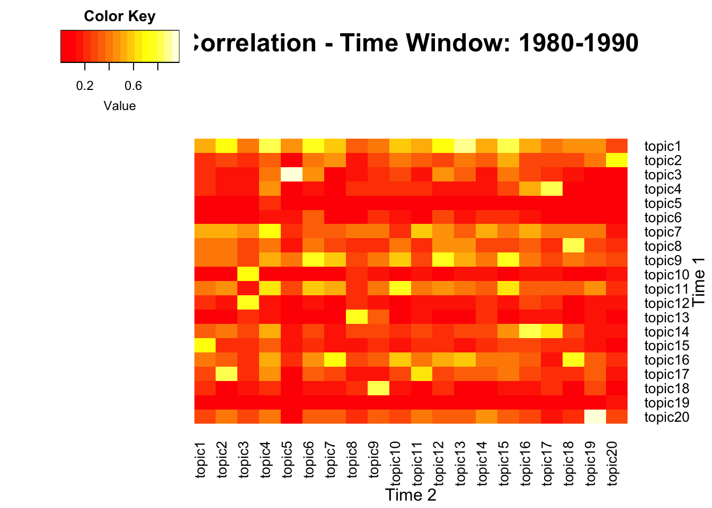
Model 1 - Topic 17
Model 2 - Topic 2
Model 1 - Topic 1
Model 2 - Topic 4
Model 1 - Topic 3
Model 2 - Topic 5
Model 1 - Topic 1
Model 2 - Topic 13
Model 1 - Topic 1
Model 2 - Topic 15
Model 1 - Topic 14
Model 2 - Topic 16
Model 1 - Topic 4
Model 2 - Topic 17
Model 1 - Topic 8
Model 2 - Topic 18
Model 1 - Topic 20
Model 2 - Topic 19
|term_1 | probability_1|term_2 | probability_2|
|:-----------|-------------:|:-----------|-------------:|
|arab | 0.0229436|peac | 0.0188866|
|israel | 0.0181559|intern | 0.0181596|
|secur | 0.0151251|arab | 0.0169743|
|intern | 0.0136683|secur | 0.0141612|
|palestinian | 0.0128704|peopl | 0.0140348|
|resolut | 0.0115161|region | 0.0119566|
|lebanon | 0.0108645|state | 0.0118064|
|state | 0.0105278|palestinian | 0.0104947|
|peac | 0.0102423|israel | 0.0100364|
|aggress | 0.0095542|resolut | 0.0090723|
|intern | 0.0245184|unit | 0.0207882|
|countri | 0.0187666|peopl | 0.0196365|
|nation | 0.0183613|nation | 0.0189694|
|peac | 0.0134369|intern | 0.0166713|
|develop | 0.0117095|countri | 0.0165514|
|unit | 0.0113202|organ | 0.0127837|
|state | 0.0102750|develop | 0.0119499|
|econom | 0.0098346|south | 0.0115643|
|peopl | 0.0094500|state | 0.0114861|
|world | 0.0088787|peac | 0.0113819|
|countri | 0.0530208|develop | 0.0480650|
|develop | 0.0492417|countri | 0.0470856|
|econom | 0.0237739|econom | 0.0250829|
|world | 0.0205835|debt | 0.0184382|
|debt | 0.0155472|world | 0.0178897|
|trade | 0.0137968|trade | 0.0142618|
|economi | 0.0122295|economi | 0.0135331|
|per | 0.0118157|per | 0.0112137|
|industri | 0.0116407|growth | 0.0103204|
|product | 0.0113145|product | 0.0102499|
|intern | 0.0245184|intern | 0.0238681|
|countri | 0.0187666|nation | 0.0132178|
|nation | 0.0183613|countri | 0.0099222|
|peac | 0.0134369|world | 0.0096795|
|develop | 0.0117095|problem | 0.0087015|
|unit | 0.0113202|polit | 0.0085881|
|state | 0.0102750|right | 0.0083825|
|econom | 0.0098346|human | 0.0081859|
|peopl | 0.0094500|econom | 0.0080370|
|world | 0.0088787|state | 0.0073496|
|intern | 0.0245184|intern | 0.0179419|
|countri | 0.0187666|develop | 0.0164110|
|nation | 0.0183613|peac | 0.0146925|
|peac | 0.0134369|countri | 0.0144130|
|develop | 0.0117095|general | 0.0121899|
|unit | 0.0113202|co | 0.0120398|
|state | 0.0102750|effort | 0.0112079|
|econom | 0.0098346|oper | 0.0094110|
|peopl | 0.0094500|problem | 0.0093121|
|world | 0.0088787|hope | 0.0083915|
|african | 0.0159341|countri | 0.0177246|
|africa | 0.0152195|africa | 0.0155790|
|peopl | 0.0144313|african | 0.0139184|
|republ | 0.0083615|peopl | 0.0125455|
|south | 0.0078900|peac | 0.0122989|
|organ | 0.0078017|communiti | 0.0094381|
|chad | 0.0074186|state | 0.0093230|
|countri | 0.0073965|republ | 0.0089449|
|deleg | 0.0071681|govern | 0.0084106|
|situat | 0.0068146|organ | 0.0075638|
|africa | 0.0617391|africa | 0.0368523|
|south | 0.0426253|african | 0.0263581|
|african | 0.0301059|govern | 0.0200972|
|apartheid | 0.0175865|countri | 0.0186818|
|regim | 0.0135692|south | 0.0171007|
|namibia | 0.0135313|peopl | 0.0147800|
|govern | 0.0123311|peac | 0.0125740|
|econom | 0.0121922|econom | 0.0102788|
|continu | 0.0096024|communiti | 0.0095902|
|communiti | 0.0087939|conflict | 0.0085829|
|world | 0.0277126|world | 0.0170844|
|peopl | 0.0236537|nation | 0.0151009|
|human | 0.0157213|peopl | 0.0133517|
|peac | 0.0156732|us | 0.0126690|
|nation | 0.0131939|can | 0.0120751|
|right | 0.0109824|one | 0.0112147|
|freedom | 0.0097943|war | 0.0092029|
|can | 0.0094097|unit | 0.0080758|
|war | 0.0092998|year | 0.0075547|
|us | 0.0090526|time | 0.0073406|
|nuclear | 0.0262229|nuclear | 0.0358322|
|state | 0.0256119|weapon | 0.0281242|
|weapon | 0.0185962|state | 0.0256245|
|soviet | 0.0163951|peac | 0.0141043|
|peac | 0.0129646|unit | 0.0135024|
|unit | 0.0107119|disarma | 0.0132850|
|propos | 0.0103144|world | 0.0129255|
|union | 0.0102776|secur | 0.0128001|
|republ | 0.0101819|arm | 0.0127249|
|arm | 0.0100126|soviet | 0.0104760|
NULL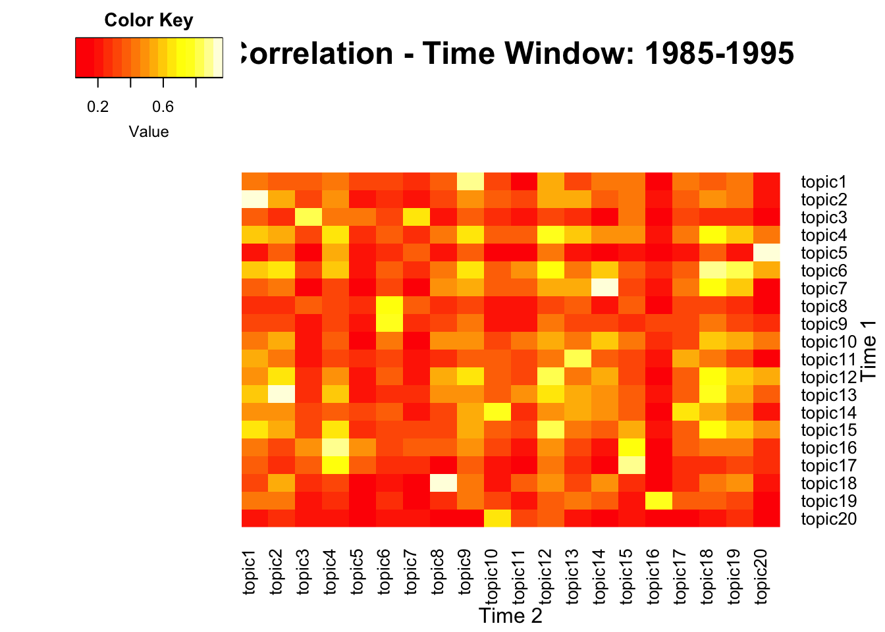
Model 1 - Topic 2
Model 2 - Topic 1
Model 1 - Topic 13
Model 2 - Topic 2
Model 1 - Topic 3
Model 2 - Topic 3
Model 1 - Topic 16
Model 2 - Topic 4
Model 1 - Topic 18
Model 2 - Topic 8
Model 1 - Topic 1
Model 2 - Topic 9
Model 1 - Topic 12
Model 2 - Topic 12
Model 1 - Topic 15
Model 2 - Topic 12
Model 1 - Topic 11
Model 2 - Topic 13
Model 1 - Topic 7
Model 2 - Topic 14
Model 1 - Topic 17
Model 2 - Topic 15
Model 1 - Topic 6
Model 2 - Topic 18
Model 1 - Topic 6
Model 2 - Topic 19
Model 1 - Topic 5
Model 2 - Topic 20
|term_1 | probability_1|term_2 | probability_2|
|:-----------|-------------:|:-----------|-------------:|
|peac | 0.0188866|peac | 0.0241691|
|intern | 0.0181596|intern | 0.0178552|
|arab | 0.0169743|secur | 0.0145541|
|secur | 0.0141612|region | 0.0138562|
|peopl | 0.0140348|arab | 0.0125076|
|region | 0.0119566|peopl | 0.0119775|
|state | 0.0118064|state | 0.0094278|
|palestinian | 0.0104947|resolut | 0.0093809|
|israel | 0.0100364|palestinian | 0.0091259|
|resolut | 0.0090723|israel | 0.0079316|
|intern | 0.0238681|intern | 0.0235339|
|nation | 0.0132178|world | 0.0154466|
|countri | 0.0099222|new | 0.0130477|
|world | 0.0096795|nation | 0.0123909|
|problem | 0.0087015|state | 0.0119237|
|polit | 0.0085881|econom | 0.0095193|
|right | 0.0083825|polit | 0.0094615|
|human | 0.0081859|develop | 0.0075077|
|econom | 0.0080370|right | 0.0074445|
|state | 0.0073496|human | 0.0069554|
|govern | 0.0235000|peac | 0.0247731|
|america | 0.0178061|peopl | 0.0208470|
|peac | 0.0176913|govern | 0.0190250|
|american | 0.0160267|democraci | 0.0181791|
|central | 0.0145229|central | 0.0177236|
|countri | 0.0132831|republ | 0.0148170|
|latin | 0.0132257|democrat | 0.0132769|
|democraci | 0.0116759|american | 0.0129516|
|peopl | 0.0109068|countri | 0.0120623|
|support | 0.0090356|america | 0.0120406|
|countri | 0.0177246|countri | 0.0263987|
|africa | 0.0155790|africa | 0.0152862|
|african | 0.0139184|african | 0.0146391|
|peopl | 0.0125455|peac | 0.0139128|
|peac | 0.0122989|develop | 0.0129092|
|communiti | 0.0094381|intern | 0.0113377|
|state | 0.0093230|communiti | 0.0085117|
|republ | 0.0089449|peopl | 0.0079571|
|govern | 0.0084106|organ | 0.0072307|
|organ | 0.0075638|state | 0.0069666|
|world | 0.0170844|world | 0.0179996|
|nation | 0.0151009|nation | 0.0176683|
|peopl | 0.0133517|peopl | 0.0147591|
|us | 0.0126690|us | 0.0136760|
|can | 0.0120751|year | 0.0127332|
|one | 0.0112147|one | 0.0117733|
|war | 0.0092029|can | 0.0103846|
|unit | 0.0080758|time | 0.0090764|
|year | 0.0075547|mani | 0.0072587|
|time | 0.0073406|war | 0.0067363|
|nation | 0.0302492|nation | 0.0308320|
|peac | 0.0224203|peac | 0.0254093|
|countri | 0.0207477|countri | 0.0228187|
|peopl | 0.0206780|unit | 0.0174925|
|south | 0.0158924|peopl | 0.0143548|
|cambodia | 0.0147773|south | 0.0140812|
|viet | 0.0124542|republ | 0.0139525|
|asia | 0.0124309|develop | 0.0125526|
|nam | 0.0118269|korea | 0.0117320|
|republ | 0.0114088|world | 0.0104608|
|nation | 0.0280568|nation | 0.0149397|
|world | 0.0256201|countri | 0.0135906|
|unit | 0.0222030|world | 0.0120101|
|develop | 0.0204847|unit | 0.0118117|
|new | 0.0203390|intern | 0.0110247|
|countri | 0.0173684|develop | 0.0103436|
|intern | 0.0112913|general | 0.0093384|
|organis | 0.0103884|co | 0.0089879|
|econom | 0.0096506|peopl | 0.0086572|
|environ | 0.0088158|south | 0.0085779|
|intern | 0.0179419|nation | 0.0149397|
|develop | 0.0164110|countri | 0.0135906|
|peac | 0.0146925|world | 0.0120101|
|countri | 0.0144130|unit | 0.0118117|
|general | 0.0121899|intern | 0.0110247|
|co | 0.0120398|develop | 0.0103436|
|effort | 0.0112079|general | 0.0093384|
|oper | 0.0094110|co | 0.0089879|
|problem | 0.0093121|peopl | 0.0086572|
|hope | 0.0083915|south | 0.0085779|
|state | 0.0173564|state | 0.0251858|
|iraq | 0.0121375|unit | 0.0211559|
|resolut | 0.0120637|council | 0.0156326|
|council | 0.0119283|countri | 0.0144361|
|unit | 0.0118544|secur | 0.0132682|
|secur | 0.0113498|intern | 0.0130576|
|intern | 0.0110790|right | 0.0099275|
|aggress | 0.0104266|resolut | 0.0090373|
|countri | 0.0103282|nation | 0.0082045|
|afghanistan | 0.0099589|iraq | 0.0074578|
|unit | 0.0444681|unit | 0.0483862|
|nation | 0.0410996|nation | 0.0462368|
|peac | 0.0133009|peac | 0.0155764|
|secur | 0.0117208|secur | 0.0153252|
|state | 0.0110263|council | 0.0120872|
|member | 0.0104938|member | 0.0116182|
|keep | 0.0099787|need | 0.0112721|
|year | 0.0091684|oper | 0.0097369|
|oper | 0.0083871|conflict | 0.0096196|
|need | 0.0083813|can | 0.0094577|
|africa | 0.0368523|africa | 0.0242802|
|african | 0.0263581|peac | 0.0200030|
|govern | 0.0200972|african | 0.0180741|
|countri | 0.0186818|govern | 0.0160928|
|south | 0.0171007|communiti | 0.0121092|
|peopl | 0.0147800|conflict | 0.0120777|
|peac | 0.0125740|countri | 0.0111342|
|econom | 0.0102788|continu | 0.0098448|
|communiti | 0.0095902|peopl | 0.0096142|
|conflict | 0.0085829|nation | 0.0076643|
|develop | 0.0283141|nation | 0.0259926|
|nation | 0.0225899|unit | 0.0217973|
|unit | 0.0207398|intern | 0.0179291|
|peac | 0.0185530|develop | 0.0161311|
|intern | 0.0143977|organ | 0.0116637|
|cooper | 0.0128252|general | 0.0113975|
|world | 0.0114561|countri | 0.0099682|
|organ | 0.0104386|import | 0.0085487|
|general | 0.0100130|year | 0.0084600|
|countri | 0.0096874|secur | 0.0082944|
|develop | 0.0283141|peac | 0.0246476|
|nation | 0.0225899|nation | 0.0207280|
|unit | 0.0207398|human | 0.0201907|
|peac | 0.0185530|right | 0.0183446|
|intern | 0.0143977|unit | 0.0168016|
|cooper | 0.0128252|world | 0.0125583|
|world | 0.0114561|develop | 0.0114975|
|organ | 0.0104386|general | 0.0114355|
|general | 0.0100130|confer | 0.0109051|
|countri | 0.0096874|forti | 0.0104987|
|develop | 0.0480650|develop | 0.0596418|
|countri | 0.0470856|countri | 0.0354460|
|econom | 0.0250829|econom | 0.0218020|
|debt | 0.0184382|world | 0.0150402|
|world | 0.0178897|global | 0.0146672|
|trade | 0.0142618|trade | 0.0137167|
|economi | 0.0135331|economi | 0.0129948|
|per | 0.0112137|growth | 0.0089161|
|growth | 0.0103204|poverti | 0.0089101|
|product | 0.0102499|social | 0.0083987|
NULL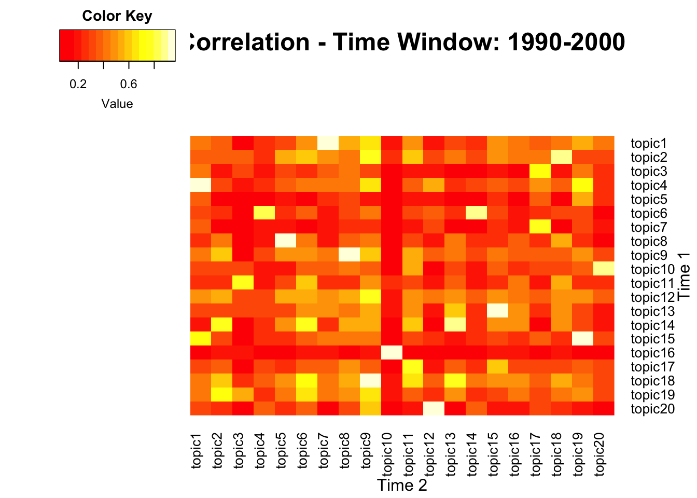
Model 1 - Topic 4
Model 2 - Topic 1
Model 1 - Topic 6
Model 2 - Topic 4
Model 1 - Topic 8
Model 2 - Topic 5
Model 1 - Topic 1
Model 2 - Topic 7
Model 1 - Topic 9
Model 2 - Topic 8
Model 1 - Topic 18
Model 2 - Topic 9
Model 1 - Topic 16
Model 2 - Topic 10
Model 1 - Topic 20
Model 2 - Topic 12
Model 1 - Topic 14
Model 2 - Topic 13
Model 1 - Topic 6
Model 2 - Topic 14
Model 1 - Topic 13
Model 2 - Topic 15
Model 1 - Topic 2
Model 2 - Topic 18
Model 1 - Topic 15
Model 2 - Topic 19
Model 1 - Topic 10
Model 2 - Topic 20
|term_1 | probability_1|term_2 | probability_2|
|:-----------|-------------:|:-----------|-------------:|
|countri | 0.0263987|african | 0.0222261|
|africa | 0.0152862|africa | 0.0201997|
|african | 0.0146391|countri | 0.0180986|
|peac | 0.0139128|peac | 0.0160535|
|develop | 0.0129092|republ | 0.0091338|
|intern | 0.0113377|organ | 0.0077517|
|communiti | 0.0085117|state | 0.0073222|
|peopl | 0.0079571|contin | 0.0070607|
|organ | 0.0072307|communiti | 0.0070140|
|state | 0.0069666|conflict | 0.0069300|
|island | 0.0254902|state | 0.0249394|
|state | 0.0216682|small | 0.0246584|
|small | 0.0210425|caribbean | 0.0243306|
|govern | 0.0161189|develop | 0.0142387|
|develop | 0.0138339|govern | 0.0126933|
|caribbean | 0.0124329|island | 0.0113352|
|pacif | 0.0103791|saint | 0.0111011|
|countri | 0.0095767|nation | 0.0100942|
|peopl | 0.0090870|trade | 0.0092981|
|nation | 0.0082165|unit | 0.0082210|
|world | 0.0179996|world | 0.0215298|
|nation | 0.0176683|peopl | 0.0208649|
|peopl | 0.0147591|nation | 0.0181641|
|us | 0.0136760|us | 0.0154272|
|year | 0.0127332|can | 0.0122728|
|one | 0.0117733|one | 0.0108708|
|can | 0.0103846|year | 0.0108193|
|time | 0.0090764|unit | 0.0098915|
|mani | 0.0072587|new | 0.0079845|
|war | 0.0067363|time | 0.0076494|
|peac | 0.0241691|peac | 0.0246016|
|intern | 0.0178552|intern | 0.0153710|
|secur | 0.0145541|secur | 0.0143548|
|region | 0.0138562|palestinian | 0.0138424|
|arab | 0.0125076|region | 0.0132209|
|peopl | 0.0119775|peopl | 0.0127337|
|state | 0.0094278|arab | 0.0120702|
|resolut | 0.0093809|israel | 0.0109112|
|palestinian | 0.0091259|state | 0.0104156|
|israel | 0.0079316|isra | 0.0096009|
|nation | 0.0308320|nation | 0.0247204|
|peac | 0.0254093|peac | 0.0236352|
|countri | 0.0228187|unit | 0.0182695|
|unit | 0.0174925|countri | 0.0156972|
|peopl | 0.0143548|republ | 0.0155163|
|south | 0.0140812|peopl | 0.0141899|
|republ | 0.0139525|democrat | 0.0134866|
|develop | 0.0125526|south | 0.0131248|
|korea | 0.0117320|korea | 0.0131047|
|world | 0.0104608|asia | 0.0105726|
|nation | 0.0259926|intern | 0.0261092|
|unit | 0.0217973|develop | 0.0230265|
|intern | 0.0179291|nation | 0.0178868|
|develop | 0.0161311|countri | 0.0156076|
|organ | 0.0116637|unit | 0.0134923|
|general | 0.0113975|organ | 0.0097923|
|countri | 0.0099682|effort | 0.0094780|
|import | 0.0085487|econom | 0.0092822|
|year | 0.0084600|peac | 0.0090790|
|secur | 0.0082944|general | 0.0090300|
|nuclear | 0.0579374|nuclear | 0.0522010|
|weapon | 0.0495689|weapon | 0.0480543|
|treati | 0.0252210|treati | 0.0225013|
|disarma | 0.0188356|disarma | 0.0164556|
|prolifer | 0.0168732|prolifer | 0.0161551|
|non | 0.0166759|non | 0.0154580|
|convent | 0.0165513|intern | 0.0146527|
|test | 0.0143190|convent | 0.0145205|
|state | 0.0126162|test | 0.0118883|
|ban | 0.0115987|state | 0.0113354|
|develop | 0.0596418|develop | 0.0570167|
|countri | 0.0354460|countri | 0.0406375|
|econom | 0.0218020|global | 0.0175263|
|world | 0.0150402|econom | 0.0161771|
|global | 0.0146672|world | 0.0137444|
|trade | 0.0137167|trade | 0.0135067|
|economi | 0.0129948|poverti | 0.0132620|
|growth | 0.0089161|economi | 0.0101442|
|poverti | 0.0089101|per | 0.0090466|
|social | 0.0083987|resourc | 0.0080330|
|unit | 0.0483862|unit | 0.0420767|
|nation | 0.0462368|nation | 0.0389590|
|peac | 0.0155764|council | 0.0195313|
|secur | 0.0153252|reform | 0.0178977|
|council | 0.0120872|general | 0.0167331|
|member | 0.0116182|member | 0.0166146|
|need | 0.0112721|organ | 0.0146306|
|oper | 0.0097369|secur | 0.0126723|
|conflict | 0.0096196|state | 0.0098277|
|can | 0.0094577|assembl | 0.0097298|
|island | 0.0254902|island | 0.0343024|
|state | 0.0216682|develop | 0.0198524|
|small | 0.0210425|pacif | 0.0173346|
|govern | 0.0161189|small | 0.0168055|
|develop | 0.0138339|state | 0.0165683|
|caribbean | 0.0124329|region | 0.0119705|
|pacif | 0.0103791|new | 0.0101095|
|countri | 0.0095767|govern | 0.0092703|
|peopl | 0.0090870|chang | 0.0091790|
|nation | 0.0082165|forum | 0.0091608|
|state | 0.0251858|state | 0.0213774|
|unit | 0.0211559|unit | 0.0169425|
|council | 0.0156326|countri | 0.0165017|
|countri | 0.0144361|secur | 0.0115571|
|secur | 0.0132682|council | 0.0111301|
|intern | 0.0130576|intern | 0.0102211|
|right | 0.0099275|afghanistan | 0.0098768|
|resolut | 0.0090373|nation | 0.0074389|
|nation | 0.0082045|resolut | 0.0074389|
|iraq | 0.0074578|power | 0.0069155|
|intern | 0.0235339|intern | 0.0171470|
|world | 0.0154466|nation | 0.0138632|
|new | 0.0130477|global | 0.0122920|
|nation | 0.0123909|state | 0.0119737|
|state | 0.0119237|world | 0.0105996|
|econom | 0.0095193|new | 0.0095538|
|polit | 0.0094615|polit | 0.0084272|
|develop | 0.0075077|human | 0.0080938|
|right | 0.0074445|can | 0.0066792|
|human | 0.0069554|organ | 0.0065176|
|africa | 0.0242802|peac | 0.0205635|
|peac | 0.0200030|africa | 0.0191045|
|african | 0.0180741|govern | 0.0179079|
|govern | 0.0160928|african | 0.0146121|
|communiti | 0.0121092|conflict | 0.0114631|
|conflict | 0.0120777|communiti | 0.0104555|
|countri | 0.0111342|countri | 0.0097102|
|continu | 0.0098448|democrat | 0.0093009|
|peopl | 0.0096142|republ | 0.0086921|
|nation | 0.0076643|continu | 0.0084927|
|european | 0.0258679|european | 0.0304160|
|europ | 0.0197587|union | 0.0216084|
|union | 0.0135123|region | 0.0162593|
|republ | 0.0135008|europ | 0.0130110|
|right | 0.0112928|cooper | 0.0123807|
|secur | 0.0098513|peac | 0.0116050|
|nation | 0.0094967|stabil | 0.0107969|
|unit | 0.0092564|republ | 0.0105222|
|peac | 0.0090162|bosnia | 0.0098111|
|state | 0.0087645|kosovo | 0.0093586|
NULL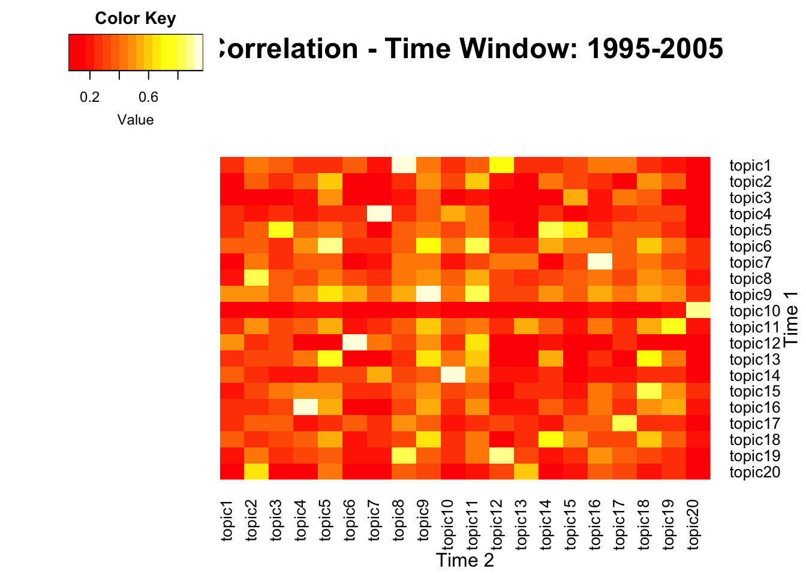
Model 1 - Topic 8
Model 2 - Topic 2
Model 1 - Topic 16
Model 2 - Topic 4
Model 1 - Topic 6
Model 2 - Topic 5
Model 1 - Topic 12
Model 2 - Topic 6
Model 1 - Topic 4
Model 2 - Topic 7
Model 1 - Topic 1
Model 2 - Topic 8
Model 1 - Topic 19
Model 2 - Topic 8
Model 1 - Topic 9
Model 2 - Topic 9
Model 1 - Topic 14
Model 2 - Topic 10
Model 1 - Topic 6
Model 2 - Topic 11
Model 1 - Topic 9
Model 2 - Topic 11
Model 1 - Topic 19
Model 2 - Topic 12
Model 1 - Topic 5
Model 2 - Topic 14
Model 1 - Topic 7
Model 2 - Topic 16
Model 1 - Topic 17
Model 2 - Topic 17
Model 1 - Topic 10
Model 2 - Topic 20
|term_1 | probability_1|term_2 | probability_2|
|:-----------|-------------:|:-----------|-------------:|
|nation | 0.0247204|peac | 0.0208142|
|peac | 0.0236352|republ | 0.0197061|
|unit | 0.0182695|region | 0.0172683|
|countri | 0.0156972|countri | 0.0170466|
|republ | 0.0155163|democrat | 0.0152334|
|peopl | 0.0141899|cooper | 0.0140447|
|democrat | 0.0134866|korea | 0.0115061|
|south | 0.0131248|nation | 0.0110830|
|korea | 0.0131047|unit | 0.0102570|
|asia | 0.0105726|stabil | 0.0097533|
|terror | 0.0455942|terror | 0.0447887|
|unit | 0.0231949|unit | 0.0211094|
|nation | 0.0194087|intern | 0.0210193|
|intern | 0.0190815|terrorist | 0.0194987|
|terrorist | 0.0174829|nation | 0.0175279|
|secur | 0.0152953|secur | 0.0120458|
|world | 0.0106864|world | 0.0116456|
|fight | 0.0102751|attack | 0.0113255|
|attack | 0.0100694|act | 0.0104051|
|general | 0.0099946|peopl | 0.0102250|
|nation | 0.0288003|unit | 0.0294021|
|unit | 0.0249612|nation | 0.0278458|
|secur | 0.0178888|secur | 0.0170035|
|develop | 0.0138393|right | 0.0157443|
|human | 0.0123789|human | 0.0140588|
|need | 0.0110715|council | 0.0127802|
|intern | 0.0096749|intern | 0.0098420|
|peac | 0.0096558|european | 0.0089121|
|conflict | 0.0093050|union | 0.0086538|
|commit | 0.0092349|support | 0.0082147|
|develop | 0.0570167|countri | 0.0406322|
|countri | 0.0406375|develop | 0.0373551|
|global | 0.0175263|per | 0.0128875|
|econom | 0.0161771|econom | 0.0127595|
|world | 0.0137444|poverti | 0.0121450|
|trade | 0.0135067|trade | 0.0112746|
|poverti | 0.0132620|cent | 0.0110271|
|economi | 0.0101442|world | 0.0092775|
|per | 0.0090466|market | 0.0086289|
|resourc | 0.0080330|resourc | 0.0084497|
|state | 0.0249394|state | 0.0287406|
|small | 0.0246584|small | 0.0245609|
|caribbean | 0.0243306|develop | 0.0216916|
|develop | 0.0142387|caribbean | 0.0199745|
|govern | 0.0126933|govern | 0.0133096|
|island | 0.0113352|econom | 0.0120895|
|saint | 0.0111011|global | 0.0109599|
|nation | 0.0100942|saint | 0.0104177|
|trade | 0.0092981|haiti | 0.0095365|
|unit | 0.0082210|island | 0.0093784|
|african | 0.0222261|african | 0.0166737|
|africa | 0.0201997|countri | 0.0160022|
|countri | 0.0180986|peac | 0.0151984|
|peac | 0.0160535|africa | 0.0123707|
|republ | 0.0091338|republ | 0.0113683|
|organ | 0.0077517|govern | 0.0101956|
|state | 0.0073222|communiti | 0.0089378|
|contin | 0.0070607|presid | 0.0077841|
|communiti | 0.0070140|particular | 0.0072356|
|conflict | 0.0069300|intern | 0.0072261|
|peac | 0.0205635|african | 0.0166737|
|africa | 0.0191045|countri | 0.0160022|
|govern | 0.0179079|peac | 0.0151984|
|african | 0.0146121|africa | 0.0123707|
|conflict | 0.0114631|republ | 0.0113683|
|communiti | 0.0104555|govern | 0.0101956|
|countri | 0.0097102|communiti | 0.0089378|
|democrat | 0.0093009|presid | 0.0077841|
|republ | 0.0086921|particular | 0.0072356|
|continu | 0.0084927|intern | 0.0072261|
|intern | 0.0261092|intern | 0.0255503|
|develop | 0.0230265|nation | 0.0195565|
|nation | 0.0178868|develop | 0.0194318|
|countri | 0.0156076|unit | 0.0155435|
|unit | 0.0134923|countri | 0.0129171|
|organ | 0.0097923|organ | 0.0117800|
|effort | 0.0094780|state | 0.0088161|
|econom | 0.0092822|general | 0.0087525|
|peac | 0.0090790|secur | 0.0086449|
|general | 0.0090300|econom | 0.0072852|
|island | 0.0343024|island | 0.0377870|
|develop | 0.0198524|nation | 0.0192817|
|pacif | 0.0173346|pacif | 0.0188685|
|small | 0.0168055|state | 0.0173020|
|state | 0.0165683|small | 0.0168889|
|region | 0.0119705|develop | 0.0147543|
|new | 0.0101095|unit | 0.0133772|
|govern | 0.0092703|new | 0.0116213|
|chang | 0.0091790|region | 0.0106573|
|forum | 0.0091608|govern | 0.0094868|
|nation | 0.0288003|develop | 0.0382197|
|unit | 0.0249612|nation | 0.0276817|
|secur | 0.0178888|unit | 0.0216642|
|develop | 0.0138393|countri | 0.0120605|
|human | 0.0123789|global | 0.0091422|
|need | 0.0110715|secur | 0.0089513|
|intern | 0.0096749|general | 0.0085746|
|peac | 0.0096558|commit | 0.0080120|
|conflict | 0.0093050|peac | 0.0080020|
|commit | 0.0092349|continu | 0.0077458|
|intern | 0.0261092|develop | 0.0382197|
|develop | 0.0230265|nation | 0.0276817|
|nation | 0.0178868|unit | 0.0216642|
|countri | 0.0156076|countri | 0.0120605|
|unit | 0.0134923|global | 0.0091422|
|organ | 0.0097923|secur | 0.0089513|
|effort | 0.0094780|general | 0.0085746|
|econom | 0.0092822|commit | 0.0080120|
|peac | 0.0090790|peac | 0.0080020|
|general | 0.0090300|continu | 0.0077458|
|peac | 0.0205635|africa | 0.0328824|
|africa | 0.0191045|african | 0.0304716|
|govern | 0.0179079|peac | 0.0290578|
|african | 0.0146121|govern | 0.0150464|
|conflict | 0.0114631|somalia | 0.0133425|
|communiti | 0.0104555|agreement | 0.0122550|
|countri | 0.0097102|communiti | 0.0116750|
|democrat | 0.0093009|conflict | 0.0109137|
|republ | 0.0086921|contin | 0.0103155|
|continu | 0.0084927|sudan | 0.0101524|
|world | 0.0215298|nation | 0.0182658|
|peopl | 0.0208649|world | 0.0182131|
|nation | 0.0181641|us | 0.0178441|
|us | 0.0154272|unit | 0.0143549|
|can | 0.0122728|can | 0.0139571|
|one | 0.0108708|global | 0.0124090|
|year | 0.0108193|time | 0.0103577|
|unit | 0.0098915|one | 0.0096005|
|new | 0.0079845|need | 0.0089630|
|time | 0.0076494|year | 0.0078127|
|peac | 0.0246016|peac | 0.0212548|
|intern | 0.0153710|intern | 0.0190332|
|secur | 0.0143548|palestinian | 0.0185205|
|palestinian | 0.0138424|arab | 0.0132677|
|region | 0.0132209|region | 0.0124852|
|peopl | 0.0127337|israel | 0.0121704|
|arab | 0.0120702|peopl | 0.0120715|
|israel | 0.0109112|secur | 0.0114599|
|state | 0.0104156|isra | 0.0101557|
|isra | 0.0096009|iraq | 0.0098229|
|countri | 0.0138776|govern | 0.0114385|
|govern | 0.0117023|social | 0.0106611|
|democraci | 0.0112079|countri | 0.0096072|
|peac | 0.0109112|human | 0.0091926|
|america | 0.0089172|right | 0.0089162|
|american | 0.0085052|peopl | 0.0082079|
|social | 0.0081756|commit | 0.0080351|
|democrat | 0.0078790|democrat | 0.0078624|
|commit | 0.0073516|peac | 0.0076032|
|central | 0.0061321|democraci | 0.0073959|
|nuclear | 0.0522010|nuclear | 0.0536951|
|weapon | 0.0480543|weapon | 0.0502367|
|treati | 0.0225013|prolifer | 0.0251193|
|disarma | 0.0164556|non | 0.0191652|
|prolifer | 0.0161551|treati | 0.0184522|
|non | 0.0154580|secur | 0.0172578|
|intern | 0.0146527|disarma | 0.0160099|
|convent | 0.0145205|state | 0.0155286|
|test | 0.0118883|world | 0.0130686|
|state | 0.0113354|arm | 0.0130686|
NULL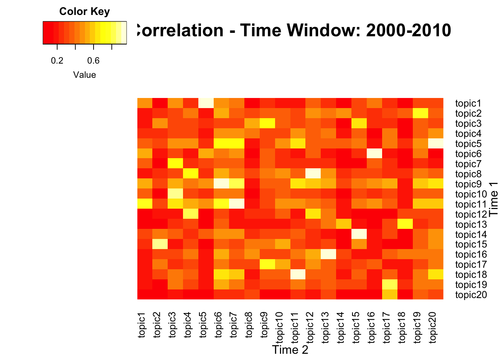
Model 1 - Topic 15
Model 2 - Topic 2
Model 1 - Topic 10
Model 2 - Topic 3
Model 1 - Topic 12
Model 2 - Topic 4
Model 1 - Topic 1
Model 2 - Topic 5
Model 1 - Topic 9
Model 2 - Topic 6
Model 1 - Topic 9
Model 2 - Topic 7
Model 1 - Topic 11
Model 2 - Topic 7
Model 1 - Topic 18
Model 2 - Topic 11
Model 1 - Topic 8
Model 2 - Topic 12
Model 1 - Topic 16
Model 2 - Topic 13
Model 1 - Topic 14
Model 2 - Topic 15
Model 1 - Topic 6
Model 2 - Topic 16
Model 1 - Topic 5
Model 2 - Topic 20
|term_1 | probability_1|term_2 | probability_2|
|:-----------|-------------:|:-----------|-------------:|
|human | 0.0278124|human | 0.0249409|
|peopl | 0.0229546|world | 0.0243663|
|world | 0.0194322|peopl | 0.0237498|
|peac | 0.0185628|right | 0.0138345|
|right | 0.0167434|peac | 0.0112642|
|democraci | 0.0119483|nation | 0.0103657|
|nation | 0.0112223|freedom | 0.0087566|
|freedom | 0.0092774|respect | 0.0085686|
|societi | 0.0077896|justic | 0.0071372|
|today | 0.0077358|power | 0.0070327|
|island | 0.0377870|island | 0.0245411|
|nation | 0.0192817|state | 0.0186376|
|pacif | 0.0188685|develop | 0.0179292|
|state | 0.0173020|nation | 0.0177385|
|small | 0.0168889|small | 0.0171481|
|develop | 0.0147543|unit | 0.0135970|
|unit | 0.0133772|climat | 0.0103274|
|new | 0.0116213|chang | 0.0099278|
|region | 0.0106573|pacif | 0.0096099|
|govern | 0.0094868|continu | 0.0091195|
|africa | 0.0328824|africa | 0.0250998|
|african | 0.0304716|african | 0.0248888|
|peac | 0.0290578|peac | 0.0197959|
|govern | 0.0150464|nation | 0.0153503|
|somalia | 0.0133425|unit | 0.0128883|
|agreement | 0.0122550|sudan | 0.0123677|
|communiti | 0.0116750|support | 0.0119175|
|conflict | 0.0109137|conflict | 0.0117346|
|contin | 0.0103155|somalia | 0.0117206|
|sudan | 0.0101524|continu | 0.0100042|
|climat | 0.0300223|global | 0.0295797|
|chang | 0.0280820|climat | 0.0283990|
|countri | 0.0174151|chang | 0.0270497|
|global | 0.0172298|develop | 0.0228774|
|develop | 0.0160988|countri | 0.0188205|
|crisi | 0.0150165|crisi | 0.0161574|
|food | 0.0130469|food | 0.0141423|
|financi | 0.0103656|world | 0.0140890|
|challeng | 0.0102388|financi | 0.0129083|
|sixti | 0.0087568|econom | 0.0122869|
|intern | 0.0255503|nation | 0.0231058|
|nation | 0.0195565|intern | 0.0210993|
|develop | 0.0194318|unit | 0.0165039|
|unit | 0.0155435|develop | 0.0140637|
|countri | 0.0129171|countri | 0.0109077|
|organ | 0.0117800|peac | 0.0099686|
|state | 0.0088161|state | 0.0090423|
|general | 0.0087525|econom | 0.0082982|
|secur | 0.0086449|general | 0.0080647|
|econom | 0.0072852|organ | 0.0077876|
|intern | 0.0255503|develop | 0.0318531|
|nation | 0.0195565|nation | 0.0227973|
|develop | 0.0194318|unit | 0.0212020|
|unit | 0.0155435|reform | 0.0124130|
|countri | 0.0129171|countri | 0.0120572|
|organ | 0.0117800|council | 0.0111439|
|state | 0.0088161|secur | 0.0105449|
|general | 0.0087525|general | 0.0103255|
|secur | 0.0086449|human | 0.0098511|
|econom | 0.0072852|intern | 0.0090801|
|develop | 0.0382197|develop | 0.0318531|
|nation | 0.0276817|nation | 0.0227973|
|unit | 0.0216642|unit | 0.0212020|
|countri | 0.0120605|reform | 0.0124130|
|global | 0.0091422|countri | 0.0120572|
|secur | 0.0089513|council | 0.0111439|
|general | 0.0085746|secur | 0.0105449|
|commit | 0.0080120|general | 0.0103255|
|peac | 0.0080020|human | 0.0098511|
|continu | 0.0077458|intern | 0.0090801|
|nation | 0.0281066|intern | 0.0267555|
|unit | 0.0265014|state | 0.0249621|
|state | 0.0201693|unit | 0.0246588|
|council | 0.0185641|nation | 0.0226401|
|intern | 0.0176778|law | 0.0148164|
|secur | 0.0162794|right | 0.0141406|
|right | 0.0136107|secur | 0.0140540|
|general | 0.0107646|council | 0.0134128|
|assembl | 0.0092776|countri | 0.0108743|
|charter | 0.0090905|member | 0.0095400|
|african | 0.0166737|countri | 0.0210827|
|countri | 0.0160022|african | 0.0165278|
|peac | 0.0151984|peac | 0.0119920|
|africa | 0.0123707|intern | 0.0117732|
|republ | 0.0113683|republ | 0.0098809|
|govern | 0.0101956|africa | 0.0098429|
|communiti | 0.0089378|secur | 0.0097953|
|presid | 0.0077841|communiti | 0.0086067|
|particular | 0.0072356|presid | 0.0077889|
|intern | 0.0072261|like | 0.0076273|
|peac | 0.0212548|intern | 0.0213642|
|intern | 0.0190332|peac | 0.0169889|
|palestinian | 0.0185205|peopl | 0.0147383|
|arab | 0.0132677|palestinian | 0.0146392|
|region | 0.0124852|arab | 0.0142071|
|israel | 0.0121704|secur | 0.0131358|
|peopl | 0.0120715|region | 0.0125866|
|secur | 0.0114599|state | 0.0104080|
|isra | 0.0101557|effort | 0.0103990|
|iraq | 0.0098229|achiev | 0.0087875|
|nation | 0.0182658|us | 0.0181718|
|world | 0.0182131|world | 0.0162767|
|us | 0.0178441|nation | 0.0151483|
|unit | 0.0143549|can | 0.0142204|
|can | 0.0139571|one | 0.0123819|
|global | 0.0124090|year | 0.0118634|
|time | 0.0103577|unit | 0.0113058|
|one | 0.0096005|time | 0.0112840|
|need | 0.0089630|peopl | 0.0081690|
|year | 0.0078127|need | 0.0080645|
|countri | 0.0406322|develop | 0.0268117|
|develop | 0.0373551|countri | 0.0260740|
|per | 0.0128875|per | 0.0186209|
|econom | 0.0127595|cent | 0.0158822|
|poverti | 0.0121450|poverti | 0.0097772|
|trade | 0.0112746|econom | 0.0097348|
|cent | 0.0110271|educ | 0.0095229|
|world | 0.0092775|achiev | 0.0094126|
|market | 0.0086289|health | 0.0084715|
|resourc | 0.0084497|trade | 0.0080221|
|unit | 0.0294021|unit | 0.0267429|
|nation | 0.0278458|nation | 0.0216005|
|secur | 0.0170035|right | 0.0193390|
|right | 0.0157443|human | 0.0173089|
|human | 0.0140588|secur | 0.0149802|
|council | 0.0127802|council | 0.0104349|
|intern | 0.0098420|peac | 0.0099050|
|european | 0.0089121|respons | 0.0097184|
|union | 0.0086538|intern | 0.0092482|
|support | 0.0082147|support | 0.0091437|
NULL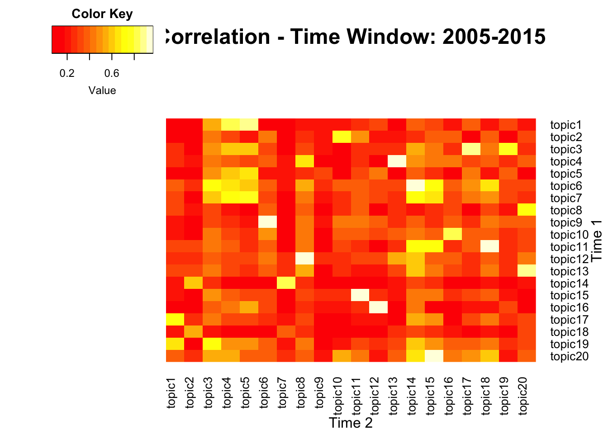
Model 1 - Topic 1
Model 2 - Topic 4
Model 1 - Topic 1
Model 2 - Topic 5
Model 1 - Topic 9
Model 2 - Topic 6
Model 1 - Topic 14
Model 2 - Topic 7
Model 1 - Topic 12
Model 2 - Topic 8
Model 1 - Topic 15
Model 2 - Topic 11
Model 1 - Topic 16
Model 2 - Topic 12
Model 1 - Topic 4
Model 2 - Topic 13
Model 1 - Topic 6
Model 2 - Topic 14
Model 1 - Topic 20
Model 2 - Topic 15
Model 1 - Topic 10
Model 2 - Topic 16
Model 1 - Topic 3
Model 2 - Topic 17
Model 1 - Topic 11
Model 2 - Topic 18
Model 1 - Topic 13
Model 2 - Topic 20
|term_1 | probability_1|term_2 | probability_2|
|:-----------|-------------:|:-----------|-------------:|
|develop | 0.0577731|develop | 0.0320632|
|sustain | 0.0236804|sustain | 0.0221929|
|agenda | 0.0223397|nation | 0.0213564|
|goal | 0.0149707|climat | 0.0137842|
|post | 0.0130554|unit | 0.0136544|
|global | 0.0127429|agenda | 0.0127457|
|nation | 0.0115836|chang | 0.0116496|
|challeng | 0.0106562|commit | 0.0104717|
|achiev | 0.0078236|global | 0.0102794|
|climat | 0.0071381|implement | 0.0095198|
|develop | 0.0577731|develop | 0.0560737|
|sustain | 0.0236804|nation | 0.0171664|
|agenda | 0.0223397|global | 0.0136741|
|goal | 0.0149707|goal | 0.0124763|
|post | 0.0130554|sustain | 0.0122341|
|global | 0.0127429|unit | 0.0122206|
|nation | 0.0115836|agenda | 0.0111709|
|challeng | 0.0106562|challeng | 0.0091925|
|achiev | 0.0078236|chang | 0.0091387|
|climat | 0.0071381|post | 0.0090579|
|peopl | 0.0195149|peopl | 0.0160034|
|countri | 0.0149424|america | 0.0134483|
|america | 0.0134131|govern | 0.0130011|
|state | 0.0128014|countri | 0.0125699|
|presid | 0.0124191|state | 0.0111805|
|govern | 0.0108287|presid | 0.0104779|
|american | 0.0099111|unit | 0.0095995|
|unit | 0.0090700|peac | 0.0094558|
|latin | 0.0090089|drug | 0.0094398|
|social | 0.0079690|american | 0.0091044|
|european | 0.0364248|european | 0.0350041|
|union | 0.0215984|union | 0.0196978|
|europ | 0.0172840|europ | 0.0165552|
|region | 0.0168072|region | 0.0129521|
|ukrain | 0.0100853|serbia | 0.0096200|
|intern | 0.0097516|global | 0.0092949|
|kosovo | 0.0094417|countri | 0.0091594|
|countri | 0.0090365|republ | 0.0089156|
|republ | 0.0089888|solut | 0.0088072|
|cooper | 0.0087743|migrat | 0.0087260|
|countri | 0.0210827|african | 0.0201980|
|african | 0.0165278|countri | 0.0159624|
|peac | 0.0119920|peac | 0.0133491|
|intern | 0.0117732|secur | 0.0122222|
|republ | 0.0098809|africa | 0.0102889|
|africa | 0.0098429|republ | 0.0083848|
|secur | 0.0097953|intern | 0.0082780|
|communiti | 0.0086067|state | 0.0075008|
|presid | 0.0077889|presid | 0.0069956|
|like | 0.0076273|mali | 0.0068305|
|us | 0.0181718|world | 0.0189229|
|world | 0.0162767|us | 0.0160265|
|nation | 0.0151483|can | 0.0131048|
|can | 0.0142204|peopl | 0.0119224|
|one | 0.0123819|year | 0.0109967|
|year | 0.0118634|nation | 0.0107471|
|unit | 0.0113058|one | 0.0107074|
|time | 0.0112840|countri | 0.0093731|
|peopl | 0.0081690|time | 0.0090006|
|need | 0.0080645|today | 0.0082919|
|develop | 0.0268117|countri | 0.0252656|
|countri | 0.0260740|per | 0.0177324|
|per | 0.0186209|cent | 0.0158308|
|cent | 0.0158822|year | 0.0118512|
|poverti | 0.0097772|educ | 0.0112785|
|econom | 0.0097348|develop | 0.0111390|
|educ | 0.0095229|econom | 0.0103534|
|achiev | 0.0094126|govern | 0.0085692|
|health | 0.0084715|health | 0.0084150|
|trade | 0.0080221|invest | 0.0079084|
|africa | 0.0250998|africa | 0.0274434|
|african | 0.0248888|african | 0.0273502|
|peac | 0.0197959|peac | 0.0218731|
|nation | 0.0153503|sudan | 0.0207367|
|unit | 0.0128883|south | 0.0179422|
|sudan | 0.0123677|somalia | 0.0140859|
|support | 0.0119175|govern | 0.0134897|
|conflict | 0.0117346|nation | 0.0129495|
|somalia | 0.0117206|peopl | 0.0116827|
|continu | 0.0100042|union | 0.0100991|
|nation | 0.0231058|intern | 0.0241845|
|intern | 0.0210993|nation | 0.0201959|
|unit | 0.0165039|countri | 0.0163578|
|develop | 0.0140637|unit | 0.0147725|
|countri | 0.0109077|develop | 0.0111213|
|peac | 0.0099686|state | 0.0104828|
|state | 0.0090423|region | 0.0097133|
|econom | 0.0082982|secur | 0.0094754|
|general | 0.0080647|effort | 0.0083174|
|organ | 0.0077876|organ | 0.0081256|
|unit | 0.0267429|unit | 0.0243021|
|nation | 0.0216005|nation | 0.0215596|
|right | 0.0193390|secur | 0.0166133|
|human | 0.0173089|human | 0.0156689|
|secur | 0.0149802|right | 0.0152511|
|council | 0.0104349|intern | 0.0147728|
|peac | 0.0099050|council | 0.0131321|
|respons | 0.0097184|conflict | 0.0126478|
|intern | 0.0092482|state | 0.0094209|
|support | 0.0091437|peac | 0.0092393|
|govern | 0.0275139|govern | 0.0199407|
|nation | 0.0250867|peac | 0.0174858|
|peopl | 0.0195079|nation | 0.0162476|
|democraci | 0.0162928|elect | 0.0151162|
|elect | 0.0147297|peopl | 0.0139421|
|polit | 0.0115655|democraci | 0.0090535|
|new | 0.0109428|right | 0.0080502|
|support | 0.0105107|democrat | 0.0080288|
|democrat | 0.0101803|process | 0.0079221|
|year | 0.0098880|myanmar | 0.0079007|
|island | 0.0245411|island | 0.0290969|
|state | 0.0186376|nation | 0.0220861|
|develop | 0.0179292|climat | 0.0191540|
|nation | 0.0177385|pacif | 0.0161156|
|small | 0.0171481|ocean | 0.0151579|
|unit | 0.0135970|chang | 0.0141885|
|climat | 0.0103274|unit | 0.0139875|
|chang | 0.0099278|state | 0.0131362|
|pacif | 0.0096099|small | 0.0119067|
|continu | 0.0091195|develop | 0.0093648|
|intern | 0.0267555|state | 0.0293244|
|state | 0.0249621|unit | 0.0246751|
|unit | 0.0246588|nation | 0.0240341|
|nation | 0.0226401|intern | 0.0191197|
|law | 0.0148164|countri | 0.0112397|
|right | 0.0141406|law | 0.0106329|
|secur | 0.0140540|right | 0.0106244|
|council | 0.0134128|war | 0.0097868|
|countri | 0.0108743|peopl | 0.0096073|
|member | 0.0095400|power | 0.0074877|
|intern | 0.0213642|peopl | 0.0203075|
|peac | 0.0169889|peac | 0.0161804|
|peopl | 0.0147383|palestinian | 0.0142251|
|palestinian | 0.0146392|state | 0.0126244|
|arab | 0.0142071|terror | 0.0116727|
|secur | 0.0131358|secur | 0.0115688|
|region | 0.0125866|arab | 0.0114390|
|state | 0.0104080|israel | 0.0108940|
|effort | 0.0103990|syrian | 0.0087482|
|achiev | 0.0087875|support | 0.0086184|
NULL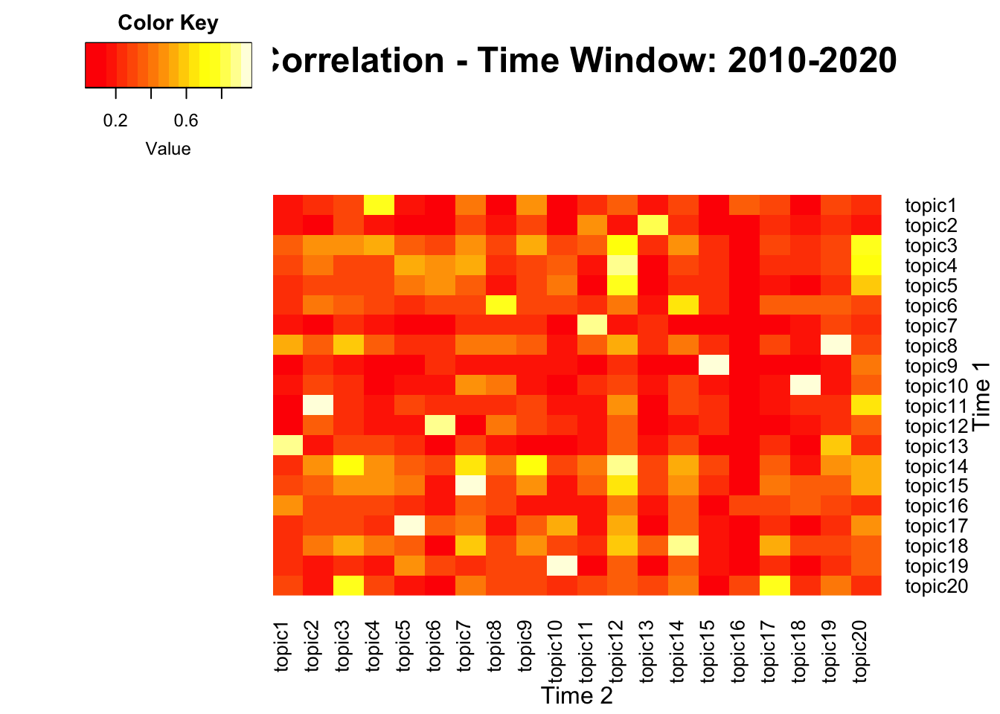
Model 1 - Topic 13
Model 2 - Topic 1
Model 1 - Topic 11
Model 2 - Topic 2
Model 1 - Topic 17
Model 2 - Topic 5
Model 1 - Topic 12
Model 2 - Topic 6
Model 1 - Topic 15
Model 2 - Topic 7
Model 1 - Topic 19
Model 2 - Topic 10
Model 1 - Topic 7
Model 2 - Topic 11
Model 1 - Topic 4
Model 2 - Topic 12
Model 1 - Topic 14
Model 2 - Topic 12
Model 1 - Topic 2
Model 2 - Topic 13
Model 1 - Topic 18
Model 2 - Topic 14
Model 1 - Topic 9
Model 2 - Topic 15
Model 1 - Topic 10
Model 2 - Topic 18
Model 1 - Topic 8
Model 2 - Topic 19
|term_1 | probability_1|term_2 | probability_2|
|:----------|-------------:|:----------|-------------:|
|africa | 0.0274434|african | 0.0210286|
|african | 0.0273502|africa | 0.0209086|
|peac | 0.0218731|peac | 0.0144519|
|sudan | 0.0207367|sudan | 0.0143079|
|south | 0.0179422|govern | 0.0136598|
|somalia | 0.0140859|south | 0.0135158|
|govern | 0.0134897|nation | 0.0132278|
|nation | 0.0129495|secur | 0.0112356|
|peopl | 0.0116827|global | 0.0086913|
|union | 0.0100991|support | 0.0083793|
|world | 0.0189229|world | 0.0224580|
|us | 0.0160265|countri | 0.0155428|
|can | 0.0131048|us | 0.0149014|
|peopl | 0.0119224|nation | 0.0138405|
|year | 0.0109967|can | 0.0120129|
|nation | 0.0107471|peopl | 0.0119405|
|one | 0.0107074|one | 0.0113426|
|countri | 0.0093731|year | 0.0107157|
|time | 0.0090006|unit | 0.0105855|
|today | 0.0082919|time | 0.0093220|
|island | 0.0290969|island | 0.0273475|
|nation | 0.0220861|climat | 0.0209025|
|climat | 0.0191540|ocean | 0.0199135|
|pacif | 0.0161156|nation | 0.0185289|
|ocean | 0.0151579|pacif | 0.0171114|
|chang | 0.0141885|chang | 0.0138477|
|unit | 0.0139875|state | 0.0112927|
|state | 0.0131362|unit | 0.0111609|
|small | 0.0119067|small | 0.0099906|
|develop | 0.0093648|develop | 0.0098257|
|countri | 0.0252656|per | 0.0182933|
|per | 0.0177324|climat | 0.0163365|
|cent | 0.0158308|cent | 0.0163365|
|year | 0.0118512|countri | 0.0161389|
|educ | 0.0112785|develop | 0.0147257|
|develop | 0.0111390|educ | 0.0116918|
|econom | 0.0103534|chang | 0.0108024|
|govern | 0.0085692|year | 0.0107925|
|health | 0.0084150|health | 0.0089643|
|invest | 0.0079084|energi | 0.0083911|
|unit | 0.0243021|unit | 0.0223396|
|nation | 0.0215596|right | 0.0196095|
|secur | 0.0166133|nation | 0.0185774|
|human | 0.0156689|secur | 0.0174141|
|right | 0.0152511|human | 0.0171795|
|intern | 0.0147728|intern | 0.0151530|
|council | 0.0131321|conflict | 0.0147777|
|conflict | 0.0126478|council | 0.0138489|
|state | 0.0094209|peac | 0.0097395|
|peac | 0.0092393|nuclear | 0.0095519|
|small | 0.0201838|small | 0.0198716|
|state | 0.0190882|state | 0.0184215|
|caribbean | 0.0167817|climat | 0.0152160|
|develop | 0.0124186|caribbean | 0.0151906|
|island | 0.0107848|develop | 0.0144782|
|climat | 0.0092279|island | 0.0128500|
|communiti | 0.0091126|global | 0.0123412|
|peopl | 0.0084975|financi | 0.0077874|
|global | 0.0082285|hurrican | 0.0076856|
|govern | 0.0081516|intern | 0.0075838|
|european | 0.0350041|european | 0.0239446|
|union | 0.0196978|region | 0.0148921|
|europ | 0.0165552|europ | 0.0134869|
|region | 0.0129521|union | 0.0130005|
|serbia | 0.0096200|countri | 0.0093525|
|global | 0.0092949|intern | 0.0092173|
|countri | 0.0091594|agreement | 0.0079743|
|republ | 0.0089156|secur | 0.0077311|
|solut | 0.0088072|turkey | 0.0071907|
|migrat | 0.0087260|bosnia | 0.0068394|
|develop | 0.0320632|nation | 0.0263457|
|sustain | 0.0221929|develop | 0.0258543|
|nation | 0.0213564|unit | 0.0179798|
|climat | 0.0137842|intern | 0.0120685|
|unit | 0.0136544|sustain | 0.0115843|
|agenda | 0.0127457|countri | 0.0110688|
|chang | 0.0116496|peac | 0.0108376|
|commit | 0.0104717|general | 0.0097970|
|global | 0.0102794|world | 0.0080987|
|implement | 0.0095198|effort | 0.0079012|
|intern | 0.0241845|nation | 0.0263457|
|nation | 0.0201959|develop | 0.0258543|
|countri | 0.0163578|unit | 0.0179798|
|unit | 0.0147725|intern | 0.0120685|
|develop | 0.0111213|sustain | 0.0115843|
|state | 0.0104828|countri | 0.0110688|
|region | 0.0097133|peac | 0.0108376|
|secur | 0.0094754|general | 0.0097970|
|effort | 0.0083174|world | 0.0080987|
|organ | 0.0081256|effort | 0.0079012|
|ukrain | 0.0163245|ukrain | 0.0277789|
|territori | 0.0143815|intern | 0.0185203|
|azerbaijan | 0.0134249|war | 0.0157736|
|intern | 0.0115117|russia | 0.0157427|
|european | 0.0112726|territori | 0.0154650|
|russia | 0.0106150|azerbaijan | 0.0135515|
|secur | 0.0100769|armenia | 0.0119775|
|georgia | 0.0098078|aggress | 0.0113912|
|conflict | 0.0096883|russian | 0.0107122|
|armenia | 0.0094192|secur | 0.0100332|
|state | 0.0293244|state | 0.0327169|
|unit | 0.0246751|unit | 0.0240363|
|nation | 0.0240341|peopl | 0.0197048|
|intern | 0.0191197|nation | 0.0135421|
|countri | 0.0112397|intern | 0.0120630|
|law | 0.0106329|countri | 0.0114644|
|right | 0.0106244|govern | 0.0103375|
|war | 0.0097868|right | 0.0082070|
|peopl | 0.0096073|impos | 0.0076787|
|power | 0.0074877|world | 0.0075026|
|pandem | 0.0317166|pandem | 0.0398447|
|covid | 0.0237547|covid | 0.0300333|
|presid | 0.0225092|presid | 0.0210796|
|un | 0.0210414|vaccin | 0.0179737|
|health | 0.0168825|un | 0.0160374|
|global | 0.0167268|health | 0.0155566|
|multilater | 0.0137689|global | 0.0109953|
|world | 0.0129460|crisi | 0.0106444|
|crisi | 0.0116338|general | 0.0105534|
|need | 0.0106552|countri | 0.0104105|
|human | 0.0309981|human | 0.0386624|
|right | 0.0274317|right | 0.0373899|
|peopl | 0.0127004|peopl | 0.0178879|
|freedom | 0.0106580|freedom | 0.0142276|
|world | 0.0102664|societi | 0.0102386|
|respect | 0.0100336|respect | 0.0099812|
|protect | 0.0098537|protect | 0.0098383|
|peac | 0.0097372|women | 0.0097239|
|societi | 0.0096632|democraci | 0.0090805|
|women | 0.0084356|life | 0.0088803|
|african | 0.0201980|african | 0.0220876|
|countri | 0.0159624|countri | 0.0146245|
|peac | 0.0133491|secur | 0.0132242|
|secur | 0.0122222|africa | 0.0128634|
|africa | 0.0102889|peac | 0.0098752|
|republ | 0.0083848|republ | 0.0087204|
|intern | 0.0082780|union | 0.0074645|
|state | 0.0075008|support | 0.0074068|
|presid | 0.0069956|sahel | 0.0070315|
|mali | 0.0068305|mali | 0.0068294|
NULL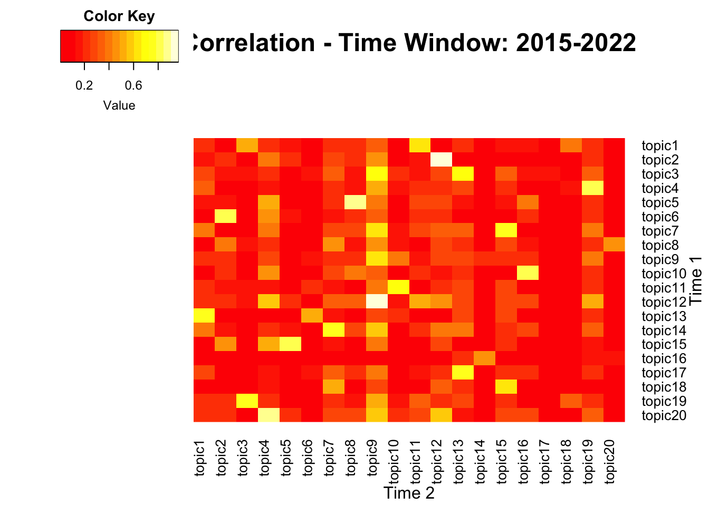
Model 1 - Topic 20
Model 2 - Topic 4
Model 1 - Topic 5
Model 2 - Topic 8
Model 1 - Topic 12
Model 2 - Topic 9
Model 1 - Topic 2
Model 2 - Topic 12
Model 1 - Topic 10
Model 2 - Topic 16
Model 1 - Topic 4
Model 2 - Topic 19
|term_1 | probability_1|term_2 | probability_2|
|:---------|-------------:|:---------|-------------:|
|global | 0.0208501|global | 0.0233609|
|world | 0.0131981|climat | 0.0175916|
|challeng | 0.0124640|develop | 0.0130856|
|need | 0.0122776|sustain | 0.0125765|
|nation | 0.0122099|chang | 0.0123408|
|develop | 0.0120404|need | 0.0119072|
|can | 0.0098550|challeng | 0.0118695|
|work | 0.0097872|us | 0.0107854|
|us | 0.0096573|continu | 0.0099558|
|new | 0.0083754|commit | 0.0098050|
|island | 0.0273475|island | 0.0273189|
|climat | 0.0209025|ocean | 0.0244976|
|ocean | 0.0199135|pacif | 0.0198754|
|nation | 0.0185289|nation | 0.0198154|
|pacif | 0.0171114|climat | 0.0115314|
|chang | 0.0138477|sea | 0.0114714|
|state | 0.0112927|peopl | 0.0102108|
|unit | 0.0111609|state | 0.0091903|
|small | 0.0099906|govern | 0.0088902|
|develop | 0.0098257|develop | 0.0082299|
|nation | 0.0263457|nation | 0.0204527|
|develop | 0.0258543|intern | 0.0186336|
|unit | 0.0179798|countri | 0.0180529|
|intern | 0.0120685|unit | 0.0154630|
|sustain | 0.0115843|develop | 0.0114342|
|countri | 0.0110688|secur | 0.0112749|
|peac | 0.0108376|peac | 0.0111722|
|general | 0.0097970|state | 0.0101495|
|world | 0.0080987|support | 0.0098875|
|effort | 0.0079012|effort | 0.0085668|
|world | 0.0224580|world | 0.0238525|
|countri | 0.0155428|us | 0.0182641|
|us | 0.0149014|countri | 0.0137598|
|nation | 0.0138405|peopl | 0.0137039|
|can | 0.0120129|one | 0.0137039|
|peopl | 0.0119405|nation | 0.0117927|
|one | 0.0113426|can | 0.0106303|
|year | 0.0107157|time | 0.0103844|
|unit | 0.0105855|unit | 0.0099261|
|time | 0.0093220|year | 0.0084732|
|small | 0.0198716|small | 0.0198552|
|state | 0.0184215|develop | 0.0191558|
|climat | 0.0152160|island | 0.0153963|
|caribbean | 0.0151906|state | 0.0148717|
|develop | 0.0144782|global | 0.0108500|
|island | 0.0128500|debt | 0.0105877|
|global | 0.0123412|caribbean | 0.0105877|
|financi | 0.0077874|financi | 0.0096260|
|hurrican | 0.0076856|financ | 0.0095385|
|intern | 0.0075838|sid | 0.0092763|
|peac | 0.0296847|develop | 0.0215431|
|unit | 0.0248111|peac | 0.0213749|
|korea | 0.0245596|countri | 0.0169165|
|nuclear | 0.0155985|cooper | 0.0165800|
|countri | 0.0138692|unit | 0.0159912|
|korean | 0.0135233|korea | 0.0148135|
|north | 0.0134919|intern | 0.0134676|
|china | 0.0130517|nation | 0.0128787|
|democrat | 0.0127058|china | 0.0119534|
|intern | 0.0126744|japan | 0.0088410|
NULLReferences
Greene, Derek, and James P. Cross. 2017. “Exploring the Political Agenda of the European Parliament Using a Dynamic Topic Modeling Approach.” Political Analysis 25 (1): 77–94. https://doi.org/10.1017/pan.2016.7.
Manning, Christopher D., Prabhakar Raghavan, and Hinrich Schütze. 2008. “Introduction to Information Retrieval,” July. https://doi.org/10.1017/cbo9780511809071.
Rieger, Jonas, Carsten Jentsch, and Jörg Rahnenführer. 2021. “RollingLDA: An Update Algorithm of Latent Dirichlet Allocation to Construct Consistent Time Series from Textual Data.” Findings of the Association for Computational Linguistics: EMNLP 2021. https://doi.org/10.18653/v1/2021.findings-emnlp.201.